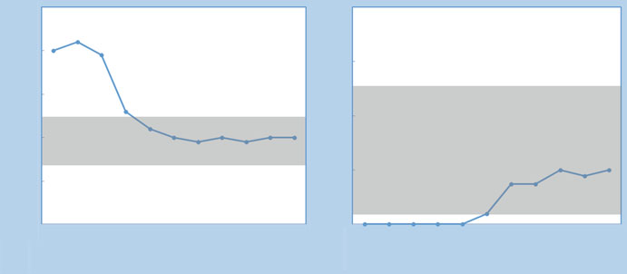

<!DOCTYPE html>
<html lang="en">
<head>
<meta charset="UTF-8">
<meta name="viewport" content="width=device-width, initial-scale=1.0">
<title>Surgical Insight Hub — Thyroid Physiology and Thyroid Diseases in Pregnancy Monograph</title>
<link href="https://fonts.googleapis.com/css2?family=Playfair+Display:wght@400;600;700&family=Source+Serif+4:ital,opsz,wght@0,8..60,300;0,8..60,400;0,8..60,600;1,8..60,300;1,8..60,400&family=JetBrains+Mono:wght@400;500&display=swap" rel="stylesheet">
<link rel="stylesheet" href="../../css/theme.css?v=4.0.0">
<link rel="stylesheet" href="../../css/shared.css">
<script>
  const savedTheme = localStorage.getItem('sih-theme') || 'light';
  if (savedTheme === 'dark') document.documentElement.setAttribute('data-theme', 'dark');
</script>
<style>
:root {
  --primary:   #4C1D95; 
  --primary-dk:#2E1065;
  --primary-lt:#F5F3FF;
  --accent:    #7C3AED;
  --accent2:   #E11D48;
  --gold:      #D97706;
  --gold-lt:   #FEF3C7;
  --red:       #E11D48;
  --red-lt:    #FFF1F2;
  --bg:        #FAFAFA;
  --bg2:       #F4F4F5;
  --border:    #E5E7EB;
  --text:      #0F172A;
  --muted:     #64748B;
  --white:     #FFFFFF;
  --sidebar-w: 320px;
}
[data-theme="dark"] {
  --bg: #0A0702;
  --bg2: #140E05;
  --text: #F3F4F6;
  --muted: #A3A3A3;
  --border: rgba(255,255,255,0.08);
  --primary-lt: #2E1065;
  --white: #140E05;
}
*,*::before,*::after{box-sizing:border-box;margin:0;padding:0;}
html{scroll-behavior:smooth;}
body{font-family:'Source Serif 4',Georgia,serif;background:var(--bg);color:var(--text);font-size:16px;line-height:1.75;}

#sidebar {
  position: fixed; top: 0; left: 0; width: var(--sidebar-w); height: 100vh;
  background: var(--primary-dk); color: #F5F3FF;
  display: flex; flex-direction: column;
  z-index: 1000; overflow: hidden;
  transform: translateX(-100%);
  transition: transform 0.3s cubic-bezier(0.4, 0, 0.2, 1);
  box-shadow: 4px 0 24px rgba(0,0,0,0.4);
}
body.sidebar-open #sidebar { transform: translateX(0); }

#sidebar-overlay {
  position: fixed; top: 0; left: 0; width: 100vw; height: 100vh;
  background: rgba(46, 16, 101, 0.7); backdrop-filter: blur(3px);
  z-index: 950; opacity: 0; pointer-events: none; transition: opacity 0.3s ease;
}
body.sidebar-open #sidebar-overlay { opacity: 1; pointer-events: auto; }

#sidebar-toggle {
  position: fixed; top: 72px; left: 24px; z-index: 900;
  background: var(--primary); color: white;
  border: none; border-radius: 30px;
  padding: 10px 18px; font-family: 'JetBrains Mono', monospace; font-size: 13px; font-weight: 600;
  letter-spacing: 0.05em; cursor: pointer; box-shadow: 0 4px 12px rgba(0,0,0,0.25);
  display: flex; align-items: center; gap: 8px; transition: all 0.2s;
}
#sidebar-toggle:hover { background: var(--accent2); transform: translateY(-2px); }

#sidebar-header{padding:20px 20px 14px;border-bottom:1px solid rgba(255,255,255,0.08);flex-shrink:0;}
#sidebar-header .logo{font-family:'Playfair Display',serif;font-size:13px;font-weight:700;color:var(--accent2);letter-spacing:0.08em;text-transform:uppercase;margin-bottom:4px;}
#sidebar-header .sub{font-size:10.5px;color:rgba(245,243,255,0.6);letter-spacing:0.04em;}
#sidebar-search{padding:10px 14px;border-bottom:1px solid rgba(255,255,255,0.05);flex-shrink:0;}
#sidebar-search input{width:100%;background:rgba(255,255,255,0.05);border:1px solid rgba(255,255,255,0.1);border-radius:6px;color:#F5F3FF;padding:6px 10px;font-size:12px;font-family:'Source Serif 4',serif;outline:none;transition:border-color 0.2s;}
#sidebar-search input::placeholder{color:rgba(245,243,255,0.4);}
#sidebar-search input:focus{border-color:var(--accent2);}
#sidebar-nav{flex:1;overflow-y:auto;padding:8px 0 20px;}
#sidebar-nav::-webkit-scrollbar{width:4px;}
#sidebar-nav::-webkit-scrollbar-thumb{background:rgba(255,255,255,0.15);border-radius:2px;}
.vol-label{font-size:9.5px;font-weight:600;letter-spacing:0.12em;text-transform:uppercase;color:var(--accent2);padding:14px 18px 4px;}
.nav-item{display:block;padding:8px 18px 8px 22px;font-size:12.5px;color:rgba(245,243,255,0.8);text-decoration:none;border-left:2px solid transparent;transition:all 0.15s;line-height:1.4;}
.nav-item:hover{color:#fff;background:rgba(255,255,255,0.03);border-left-color:rgba(225,29,72,0.5);}
.nav-item.active{color:#fff;background:rgba(255,255,255,0.06);border-left-color:var(--accent2);font-weight:600;}
.nav-item .num{font-family:'JetBrains Mono',monospace;font-size:10px;color:rgba(245,243,255,0.4);margin-right:6px;}

#main{margin-left:0; min-height:100vh;}
#hero{background:linear-gradient(135deg,var(--primary-dk) 0%,#4C1D95 60%,#2E1065 100%);color:white;padding:120px 72px 60px;position:relative;overflow:hidden;}
#hero::before{content:'';position:absolute;top:-60px;right:-60px;width:380px;height:380px;background:radial-gradient(circle,rgba(225,29,72,0.15) 0%,transparent 70%);pointer-events:none;}
#hero::after{content:'';position:absolute;bottom:0;left:0;right:0;height:3px;background:linear-gradient(90deg,var(--accent2),var(--gold),transparent);}
#hero .eyebrow{font-family:'JetBrains Mono',monospace;font-size:11px;letter-spacing:0.16em;color:var(--accent2);text-transform:uppercase;margin-bottom:14px;}
#hero h1{font-family:'Playfair Display',serif;font-size:42px;font-weight:700;line-height:1.15;margin-bottom:10px;color:#fff;}
#hero .subtitle{font-size:18px;color:rgba(255,255,255,0.8);font-style:italic;margin-bottom:28px;}
#hero .badges{display:flex;gap:10px;flex-wrap:wrap;}
#hero .badge{background:rgba(255,255,255,0.1);border:1px solid rgba(255,255,255,0.2);border-radius:20px;padding:4px 14px;font-size:12px;color:rgba(255,255,255,0.95);font-family:'JetBrains Mono',monospace;}

.content-wrap{max-width:900px;margin:0 auto;padding:40px 48px 80px;}

.callout{margin:18px 0;padding:14px 18px;border-radius:0 8px 8px 0;border-left:4px solid;font-size:14px;line-height:1.65;}
.callout .label{font-family:'JetBrains Mono',monospace;font-size:10px;font-weight:600;letter-spacing:0.12em;text-transform:uppercase;display:block;margin-bottom:4px;}
.callout.pearl{background:var(--gold-lt);border-color:var(--gold);color:var(--text);}
.callout.pearl .label{color:var(--gold);}
.callout.warn{background:var(--red-lt);border-color:var(--red);color:var(--text);}
.callout.warn .label{color:var(--red);}

@media(max-width:900px) {
  .content-wrap { padding: 20px 20px 60px; }
  #hero { padding: 80px 20px 40px; }
  #hero h1 { font-size: 30px; }
  #sidebar-toggle { top: 64px; left: 16px; }
}
</style>
<link rel="icon" type="image/png" href="../../assets/images/Surgical_Insight_Hub_Logo.png">
</head>
<body>

<nav class="nav" id="mainNav">
  <div class="nav-left">
    <a href="../../index.html" class="nav-pill">
      <div class="nav-logo-img">
        
      </div>
      <div>
        <div class="nav-brand-text">Surgical Insight Hub</div>
        <div class="nav-brand-sub">The Residency Journal</div>
      </div>
    </a>
  </div>
  <div class="nav-links-pill">
    <a href="../../index.html">Home</a>
    <a href="../../notes.html" class="active">Notes</a>
    <a href="../operative_approach.html">Playbook</a>
    <a href="../../arena.html?v=4.0.0">MCQ Arena</a>
    <a href="../../podcast.html">Podcast</a>
    <a href="../../surgery-talk.html">Surgery Talk</a>
    <a href="../../about.html">About</a>
  </div>
  <div class="nav-right">
    <button class="theme-toggle" id="themeToggle" aria-label="Toggle Theme">
      <svg id="moonIcon" viewBox="0 0 24 24" width="18" height="18"><path d="M21 12.79A9 9 0 1 1 11.21 3 7 7 0 0 0 21 12.79z"></path></svg>
      <svg id="sunIcon" style="display:none;" viewBox="0 0 24 24" width="18" height="18"><circle cx="12" cy="12" r="5"></circle><line x1="12" y1="1" x2="12" y2="3"></line><line x1="12" y1="21" x2="12" y2="23"></line><line x1="4.22" y1="4.22" x2="5.64" y2="5.64"></line><line x1="18.36" y1="18.36" x2="19.78" y2="19.78"></line><line x1="1" y1="12" x2="3" y2="12"></line><line x1="21" y1="12" x2="23" y2="12"></line><line x1="4.22" y1="19.78" x2="5.64" y2="18.36"></line><line x1="18.36" y1="5.64" x2="19.78" y2="4.22"></line></svg>
    </button>
    <a href="https://t.me/sugicalInsightHub" target="_blank" class="nav-tg-btn" title="Join Telegram">
      <svg width="18" height="18" viewBox="0 0 24 24" fill="#f0d080"><path d="M12 0C5.37 0 0 5.37 0 12s5.37 12 12 12 12-5.37 12-12S18.63 0 12 0zm5.89 8.22l-1.97 9.28c-.15.66-.54.82-1.08.51l-3-2.21-1.45 1.39c-.16.16-.3.3-.61.3l.21-3.05 5.56-5.02c.24-.21-.05-.33-.37-.12l-6.87 4.33-2.96-.92c-.64-.2-.66-.64.14-.95l11.57-4.46c.54-.19 1.01.13.83.94z"/></svg>
    </a>
    <a href="../../arena.html?v=4.0.0" class="nav-btn arena-btn">MCQ Arena</a>
  </div>
</nav>

<div class="mob-nav-overlay" id="mobNavOverlay" onclick="closeMobNav()"></div>
<div class="mob-nav-sheet" id="mobNavSheet">
  <div class="mob-nav-handle"></div>
  <a href="../../index.html" onclick="closeMobNav()">Home</a>
  <a href="../../notes.html" onclick="closeMobNav()">Notes</a>
  <a href="../operative_approach.html" onclick="closeMobNav()">Playbook</a>
  <a href="../../podcast.html" onclick="closeMobNav()">Podcast</a>
  <a href="../../surgery-talk.html" onclick="closeMobNav()">Surgery Talk</a>
  <a href="../../arena.html" onclick="closeMobNav()">MCQ Arena</a>
  <a href="../../about.html" onclick="closeMobNav()">About</a>
  <a href="https://t.me/sugicalInsightHub" target="_blank" rel="noopener" onclick="closeMobNav()" style="color: var(--brand-gold); font-weight: 800;">Join Telegram Community</a>
</div>

<button id="sidebar-toggle" onclick="toggleSidebar()">
  <span>📜</span> Chapter Navigation
</button>
<div id="sidebar-overlay" onclick="closeSidebar()"></div>

<aside id="sidebar">
  <div id="sidebar-header">
    <div class="logo">Surgical Insight Hub</div>
    <div class="sub">Thyroid Dx Textbook Series</div>
  </div>
  <div id="sidebar-search">
    <input type="text" placeholder="Search chapters..." oninput="filterNav(this.value)">
  </div>
  <nav id="sidebar-nav">
    <div class="vol-label">All 25 Endocrine Chapters</div>
    <a class="nav-item" href="endocrine_ch01_regulation_of_thyroid_function.html"><span class="num">Ch 1</span>Regulation of Thyroid Function, Synthesis, and Function of Thyroid Hormones</a>
<a class="nav-item" href="endocrine_ch02_tests_of_thyroid_function.html"><span class="num">Ch 2</span>Tests of Thyroid Function</a>
<a class="nav-item" href="endocrine_ch03_thyroid_autoantibodies.html"><span class="num">Ch 3</span>Thyroid Autoantibodies</a>
<a class="nav-item" href="endocrine_ch04_nonisotopic_thyroid_imaging.html"><span class="num">Ch 4</span>Nonisotopic Thyroid Imaging</a>
<a class="nav-item" href="endocrine_ch05_nontoxic_goiter.html"><span class="num">Ch 5</span>Nontoxic Goiter</a>
<a class="nav-item" href="endocrine_ch06_thyroid_nodule.html"><span class="num">Ch 6</span>Thyroid Nodule</a>
<a class="nav-item" href="endocrine_ch07_hashimoto_s_thyroiditis.html"><span class="num">Ch 7</span>Hashimoto´s Thyroiditis</a>
<a class="nav-item" href="endocrine_ch08_postpartum_thyroiditis_and_sil.html"><span class="num">Ch 8</span>Postpartum Thyroiditis and Silent Thyroiditis</a>
<a class="nav-item" href="endocrine_ch09_acute_and_subacute_thyroiditis.html"><span class="num">Ch 9</span>Acute and Subacute Thyroiditis</a>
<a class="nav-item" href="endocrine_ch10_classification_and_etiopathoge.html"><span class="num">Ch 10</span>Classification and Etiopathogenesis of Hypothyroidism</a>
<a class="nav-item" href="endocrine_ch11_congenital_hypothyroidism.html"><span class="num">Ch 11</span>Congenital Hypothyroidism</a>
<a class="nav-item" href="endocrine_ch12_central_hypothyroidism.html"><span class="num">Ch 12</span>Central Hypothyroidism</a>
<a class="nav-item" href="endocrine_ch13_diagnosis_and_treatment_of_hyp.html"><span class="num">Ch 13</span>Diagnosis and Treatment of Hypothyroidism</a>
<a class="nav-item" href="endocrine_ch14_graves_disease.html"><span class="num">Ch 14</span>Graves´ Disease</a>
<a class="nav-item" href="endocrine_ch15_graves_ophthalmopathy.html"><span class="num">Ch 15</span>Graves´ Ophthalmopathy</a>
<a class="nav-item" href="endocrine_ch16_treatment_of_graves_disease.html"><span class="num">Ch 16</span>Treatment of Graves´ Disease</a>
<a class="nav-item" href="endocrine_ch17_toxic_adenoma_and_multinodular.html"><span class="num">Ch 17</span>Toxic Adenoma and Multinodular Toxic Goiter</a>
<a class="nav-item" href="endocrine_ch18_pathogenesis_of_thyroid_carcin.html"><span class="num">Ch 18</span>Pathogenesis of Thyroid Carcinoma</a>
<a class="nav-item" href="endocrine_ch19_differentiated_thyroid_carcino.html"><span class="num">Ch 19</span>Differentiated Thyroid Carcinoma of Follicular Origin</a>
<a class="nav-item" href="endocrine_ch20_medullary_carcinoma.html"><span class="num">Ch 20</span>Medullary Carcinoma</a>
<a class="nav-item" href="endocrine_ch21_anaplastic_and_other_forms_of_.html"><span class="num">Ch 21</span>Anaplastic and Other Forms of Thyroid Carcinoma</a>
<a class="nav-item" href="endocrine_ch22_new_medical_treatment_for_thyr.html"><span class="num">Ch 22</span>New (Medical) Treatment for Thyroid Carcinoma</a>
<a class="nav-item active" href="endocrine_ch23_thyroid_physiology_and_thyroid.html"><span class="num">Ch 23</span>Thyroid Physiology and Thyroid Diseases in Pregnancy</a>
<a class="nav-item" href="endocrine_ch24_non_thyroidal_illness.html"><span class="num">Ch 24</span>Non-thyroidal Illness</a>
<a class="nav-item" href="endocrine_ch25_drugs_and_other_substances_int.html"><span class="num">Ch 25</span>Drugs and Other Substances Interfering with Thyroid Function</a>

  </nav>
</aside>

<main id="main">
<header id="hero">
  <div class="eyebrow">Endocrine Surgery · Chapter 23</div>
  <h1>Thyroid Physiology and Thyroid Diseases in Pregnancy</h1>
  <p class="subtitle">Structured Surgical Monograph formatted with fluid prose, inline textbook diagnostic plates, and clinical guidance.</p>
  <div class="badges">
    <span class="badge">Chapter 23</span>
    <span class="badge">Inline Plates</span>
    <span class="badge">Thyroid Dx PDF</span>
  </div>
</header>

<div class="content-wrap">
  <section class="topic">
    
    <div class="callout pearl" style="margin-bottom:28px;">
      <span class="label">🎓 TEXTBOOK MONOGRAPH — THYROID DX</span>
      Full surgical monograph extracted directly from <strong>Thyroid Pathology and Laboratory Diagnostics</strong> (Chapter 23: Thyroid Physiology and Thyroid Diseases in Pregnancy). Features complete text, formatted clinical guidance, and inline textbook figures.
    </div>
<ul style="margin:12px 0 20px 20px;">
<li style="margin-bottom:8px; line-height:1.65;"><strong>Thyroid Physiology and</strong> Thyroid Diseases in Pregnancy Bijay Vaidya and Shiao-Yng Chan Contents</li>
</ul>
<h3 style="font-family:'Playfair Display',serif; font-size:20px; color:var(--primary); margin:32px 0 14px; border-bottom:1px solid var(--border); padding-bottom:6px;">Introduction ......................................................................................</h3>

                <div style="display:flex; gap:16px; margin:20px 0; padding:16px; border-radius:14px; border:1px solid var(--border); background:var(--bg2); align-items:center;">
                  <div style="width:180px; min-width:180px; height:140px; border-radius:10px; overflow:hidden; border:1px solid var(--border); background:#fff; display:flex; align-items:center; justify-content:center; padding:6px; flex-shrink:0;">
                    
                  </div>
                  <div style="flex:1;">
                    <div style="font-family:'JetBrains Mono',monospace; font-size:11px; font-weight:700; color:var(--accent2); text-transform:uppercase; margin-bottom:6px;">Textbook Illustration &amp; Diagnostic Plate</div>
                    <div style="font-size:13.5px; color:var(--muted); line-height:1.5;">High-resolution diagnostic plate illustrating introduction ...................................................................................... in Chapter 23.</div>
                  </div>
                </div>
<p style="font-size:16px; line-height:1.75; margin-bottom:16px; color:var(--text);">Changes in Maternal Thyroid Physiology in Pregnancy ....................................... Regulation of Fetal Thyroid Function and Thyroid Hormone Action ......................... Assessment of Thyroid Function in Pregnancy ................................................. Iodine Deficiency and Its Consequences ....................................................... Hypothyroidism ................................................................................. Overt Hypothyroidism ....................................................................... Subclinical Hypothyroidism ................................................................. Maternal Hypothyroxinemia ................................................................. Screening for Hypothyroidism in Pregnancy ............................................... Euthyroid Autoimmune Thyroid Disease ....................................................... Thyroid Function in Female Subfertility and Women Undergoing Assisted Reproductive Technology ....................................................................... Thyrotoxicosis ................................................................................... Gestational Transient Thyrotoxicosis ........................................................ Graves’ Disease .............................................................................. Thyroid Nodules and Thyroid Cancer .......................................................... Thyroid Nodules ............................................................................. Thyroid Cancer .............................................................................. Conclusion ....................................................................................... B. Vaidya (*) Department of Endocrinology, Royal Devon and Exeter Hospital, University of Exeter Medical School, Exeter, UK e-mail: b.vaidya@exeter.ac.uk S.-Y. Chan Department of Obstetrics and Gynaecology, Yong Loo Lin School of Medicine, National University of Singapore, Singapore, Singapore e-mail: obgchan@nus.edu.sg # Springer International Publishing AG, part of Springer Nature 2018 P. Vitti, L. Hegedüs (eds.), Thyroid Diseases, Endocrinology,</p>
<h3 style="font-family:'Playfair Display',serif; font-size:20px; color:var(--primary); margin:32px 0 14px; border-bottom:1px solid var(--border); padding-bottom:6px;">Summary .........................................................................................</h3>

                <div style="display:flex; gap:16px; margin:20px 0; padding:16px; border-radius:14px; border:1px solid var(--border); background:var(--bg2); align-items:center;">
                  <div style="width:180px; min-width:180px; height:140px; border-radius:10px; overflow:hidden; border:1px solid var(--border); background:#fff; display:flex; align-items:center; justify-content:center; padding:6px; flex-shrink:0;">
                    
                  </div>
                  <div style="flex:1;">
                    <div style="font-family:'JetBrains Mono',monospace; font-size:11px; font-weight:700; color:var(--accent2); text-transform:uppercase; margin-bottom:6px;">Textbook Illustration &amp; Diagnostic Plate</div>
                    <div style="font-size:13.5px; color:var(--muted); line-height:1.5;">High-resolution diagnostic plate illustrating summary ......................................................................................... in Chapter 23.</div>
                  </div>
                </div>
<ul style="margin:12px 0 20px 20px;">
<li style="margin-bottom:8px; line-height:1.65;">Cross-References ................................................................................</li>
</ul>
<h3 style="font-family:'Playfair Display',serif; font-size:20px; color:var(--primary); margin:32px 0 14px; border-bottom:1px solid var(--border); padding-bottom:6px;">References .......................................................................................</h3>

                <div style="display:flex; gap:16px; margin:20px 0; padding:16px; border-radius:14px; border:1px solid var(--border); background:var(--bg2); align-items:center;">
                  <div style="width:180px; min-width:180px; height:140px; border-radius:10px; overflow:hidden; border:1px solid var(--border); background:#fff; display:flex; align-items:center; justify-content:center; padding:6px; flex-shrink:0;">
                    
                  </div>
                  <div style="flex:1;">
                    <div style="font-family:'JetBrains Mono',monospace; font-size:11px; font-weight:700; color:var(--accent2); text-transform:uppercase; margin-bottom:6px;">Textbook Illustration &amp; Diagnostic Plate</div>
                    <div style="font-size:13.5px; color:var(--muted); line-height:1.5;">High-resolution diagnostic plate illustrating references ....................................................................................... in Chapter 23.</div>
                  </div>
                </div>
<p style="font-size:16px; line-height:1.75; margin-bottom:16px; color:var(--text);">Abstract Thyroid disorders are common in pregnancy and can result in serious complica- tions for the pregnant woman and her child. It is well recognized that optimum treatment of both overt hypothyroidism and hyperthyroidism reduces the com- plications, and pregnant women with these conditions should be treated. How- ever, because of limited evidence for the benefit from intervention studies, it remains controversial whether subclinical thyroid diseases, such as subclinical hypothyroidism, maternal hypothyroxinemia, and euthyroid autoimmune thyroid disease should be treated and whether all pregnant women should be screened for these conditions. Management of many thyroid disorders (for example, Graves’ disease) in pregnant women is complex and requires a multidisciplinary approach for optimal outcome. This chapter summarizes current knowledge of thyroid physiology and management of thyroid disorders in pregnancy. Keywords Graves’ disease · Hypothyroidism · Human chorionic gonadotrophin · Iodine · Pregnancy · TPO antibodies · TSH receptor antibodies · Thyroxine · Hypothyroxinemia Abbreviations Ab Antibodies ART Assisted reproductive technology FNAC Fine needle aspiration cytology hCG Human chorionic gonadotrophin HLA Human leukocyte antigen HPT Hypothalamic-pituitary-thyroid IQ Intelligence quotient ICCIDD International Council for the Control of Iodine Deficiency Disorders T3 Triiodothyronine T4 Thyroxine TBG Thyroxine binding globulin Tg Thyroglobulin Th1 Type 1 helper T cell Th2 Type 2 helper T cell TPO Thyroid peroxidase TR Thyroid hormone receptor TREG Regulatory CD4 + CD25 + T cells TSH Thyrotrophin UIC Urinary iodine concentration WHO World Health Organisation B. Vaidya and S.-Y. Chan</p>
<h3 style="font-family:'Playfair Display',serif; font-size:20px; color:var(--primary); margin:32px 0 14px; border-bottom:1px solid var(--border); padding-bottom:6px;">Introduction</h3>
<p style="font-size:16px; line-height:1.75; margin-bottom:16px; color:var(--text);">Thyroid disorders are common amongst women of the reproductive age. Due to the physiological changes of pregnancy, preexisting thyroid disorders may get exacer- bated or go into remission during pregnancy. New onset thyroid disease may also arise during pregnancy or a thyroid condition that predated pregnancy may only get diagnosed when a young woman seeks antenatal care. Thus, it is important that clinicians are aware of the potential effects of pregnancy on thyroid conditions and vice versa and adopt a multidisciplinary approach for effective management. There is good understanding of the normal physiological changes within the thyroid axis during pregnancy and also well-documented historical evidence of improved pregnancy outcomes with treatment of overt thyroid disease. However, there is much variation in clinical practice with regards the precise management of thyroid disorders in pregnancy and many aspects remain controversial. Moreover, managing women in pregnancy requires the consideration of several additional dimensions: an understanding of the dynamic physiological changes occurring across the duration of pregnancy, the concept of time-limited gestational windows of development, as well as an appreciation that the interests of both mother and fetus need to be considered, and sometimes their interests are conflicting. This chapter will provide a framework comprising current knowledge of thyroid physiology and disease in pregnancy to which new knowledge can be easily incorporated in this rapidly progressing field. Changes in Maternal Thyroid Physiology in Pregnancy Following fertilization, the blastocyst starts releasing endocrine signals that bring about a cascade of physiological changes in the pregnant women even before she is aware she is pregnant. One of the earliest signals from the conceptus is the release of human chorionic gonadotrophin (hCG), which shares the same alpha subunit as thyrotropin (TSH) but has a beta subunit which differs in the terminal 30 amino acids. The peak in hCG level occurs around 10 weeks’ gestation and begins to decline from 14 weeks to a stable low level from 20 weeks until delivery. The high homology to TSH makes hCG mildly thyrotrophic and able to stimulate the thyroid gland to increase thyroxine production from the start of pregnancy (Fig. 1). This predates the estrogen-stimulated rise in thyroxine binding globulin (TBG) occurring from 6–8 weeks gestation. Increased TBG concentrations result in a corresponding increase in total circulating thyroxine by 50% in the first trimester which is sustained until the end of pregnancy (Chan and Mandel 2007). A normally functioning thyroid gland would be able to meet this increased thyroid demand. The resultant effect is a significant decline in circulating TSH concentrations over the course of the first trimester, reaching a nadir around</p>
<ul style="margin:12px 0 20px 20px;">
<li style="margin-bottom:8px; line-height:1.65;"><strong>10 weeks’ gestation</strong> when the hCG level is at its peak (Glinoer et al. 1990, 1993).</li>
</ul>
<p style="font-size:16px; line-height:1.75; margin-bottom:16px; color:var(--text);">In about 3% of normal pregnancies, almost complete TSH suppression occurs. Clear ethnic variation is observed with a greater gestational suppression of TSH occurring Thyroid Physiology and Thyroid Diseases in Pregnancy in Asians and Blacks compared with Caucasians (Price et al. 2001; Benhadi et al. 2007). TSH then stabilizes at a level slightly lower than preconception concentra- tions in the second trimester before rising again during the third trimester towards preconception concentrations (Dashe et al. 2005). On the other hand, free thyroxine (T4) concentrations would rise in the first trimester then gradually decline over the course of pregnancy. Mostly the rise of free T4 in the first trimester is only slight but in a small proportion of cases significantly elevated free T4 concentrations similar to those seen in thyrotoxicosis may occur (see below, gestational transient thyrotoxi- cosis). The degree of decline in later pregnancy is largely dependent on the assay platform used for measurement (as they are differentially affected by the protein milieu of pregnancy) and is typically around 20% to 50% from the first trimester to the end of pregnancy (Sapin et al. 2004). Some have argued that the hypothalamic- pituitary-thyroid (HPT) axis dynamically changes its negative feedback set point centrally across gestation to maintain appropriate levels of thyroid hormone at each stage of pregnancy for optimal fetal development (Brent 1997). Increased thyroid hormone demand and changes in thyroid function during pregnancy are also due to several other factors (Fig. 1). There is a gradual increase in maternal blood volume starting from the first trimester and rising by as much as 40% by the second trimester of pregnancy. The placenta is rich in deiodinase type</p>
<ul style="margin:12px 0 20px 20px;">
<li style="margin-bottom:8px; line-height:1.65;"><strong>3 enzymes which</strong> metabolize thyroid hormones and regulate the trans-placental</li>
</ul>
<p style="font-size:16px; line-height:1.75; margin-bottom:16px; color:var(--text);">passage of thyroid hormones from the mother to the fetus (Chan et al. 2009). In iodine sufficient regions of the world, a physiological increase in the size of the thyroid gland by an average of 10% to 20% contributes to the maintenance of thyroid homeostasis during pregnancy (Rasmussen et al. 1989; Glinoer et al. 1990). Fig. 1 Physiological changes in pregnancy and their impact on the thyroid (Abbreviations: Ab, antibodies; hCG, human chorionic gonadotrophin; TBG, thyroxine binding globulin; TSH, thyro- trophin; T4, thyroxine; T3 triiodothyronine) B. Vaidya and S.-Y. Chan Iodine is an essential constituent of thyroid hormones. Renal excretion of iodine increases from the first trimester requiring a higher daily intake of iodine to ensure the increased thyroid hormone production can be sustained. With mild to moderate iodine deficiency, some further diffuse enlargement of the thyroid gland may occur, so the normal physiological changes in thyroid function may not be affected significantly (Zimmermann and Delange 2004), but in more severe iodine defi- ciency, pregnancy can trigger significant hypothyroidism or hypothyroxinemia, particularly in the third trimester (Zimmermann 2009). During pregnancy, the mother’s immune system undergoes several physiological changes to maintain tolerance of her fetus. Of these changes, an expansion of the specific regulatory CD4+ CD25+ T (TREG) cells is the most important as these cells play a crucial role in maintaining the immune tolerance (Weetman 2010). This expansion starts in early pregnancy, the number of TREG cells increasing rapidly and peaking in the second trimester. They accumulate mostly in the decidua and to a less extent in the maternal peripheral circulation. TREG cells are capable of suppressing both type 1 helper T cell (Th1) and type 2 helper T cell (Th2) immune response against fetal alloantigens. Because of this physiological state of suppressed immune responsiveness, levels of autoantibodies (including TSH receptor anti- bodies) tend to decline during pregnancy, leading to amelioration of several auto- immune disorders, including Graves’ disease. After delivery, the number of TREG cells rapidly falls to prepregnancy level, which can often lead to postpartum exac- erbation of thyroid autoimmunity (for example, relapse of Graves’ disease). In addition to the expansion of TREG cells, immunomodulatory effects of hormones (for example, reduced B cell activity in response to increased progesterone level), a shift from Th1 to Th2 cytokines profile and the expression of immune regulatory molecules (for example, HLA G) in the trophoblast also contribute to the immune tolerance in pregnancy. Regulation of Fetal Thyroid Function and Thyroid Hormone Action The fetal thyroid gland is formed and begins accumulating iodine from 10–12 weeks of gestation but only starts to endogenously release an appreciable amount of thyroid hormones from 16–18 weeks of gestation following the secretion of pituitary TSH (Thorpe-Beeston et al. 1991). However, a fully mature HPT axis with appropriate negative feedback is not attained until postnatal life. Consequently, during in utero life both TSH and thyroid hormones rise concurrently and different physiological mechanisms are employed during fetal development to regulate biological activity at a tissue level. Also, the fetal thyroid is especially sensitive to excessive iodine which can suppress fetal thyroid activity (Williams et al. 2017). Transplacental passage of maternal thyroid hormones, primarily thyroxine, from the mother to the fetus occurs throughout gestation. Circulating thyroid hormones in the fetus before 16 weeks’ gestation are of maternal origin only and becomes of dual origin following endogenous fetal production. In athyroidal fetuses, transplacental Thyroid Physiology and Thyroid Diseases in Pregnancy maternal supply is capable of restoring about 50% of normal fetal thyroid hormone levels by the end of pregnancy (Vulsma et al. 1989). In normal healthy pregnancies, there is a positive correlation between maternal third trimester free T4 levels and fetal free T4 levels in cord blood at birth, with every 10% increase in maternal free T4 leading to a 0.18 pmol/L increase in fetal cord blood free T4 (Shields et al. 2011). These observations indicate that maternal thyroid hormones contribute to the thyroid hormone pool of the fetus throughout its in utero life, underlining the importance of maintaining normal maternal thyroid function from early gestation right up to the end of gestation. Premature neonates suffer an abrupt termination of maternal thyroid supply resulting in significantly lower circulating thyroxine concentrations compared with in utero fetuses of the same gestational age; however, iodine and thyroxine supplementation in this context remains controversial (Williams et al. 2006, 2014; van Wassenaer-Leemhuis et al. 2014). The fetus and placenta themselves require thyroid hormones for optimal devel- opment, even before endogenous fetal thyroid hormone production. Classical under- standing of thyroid hormone action is that circulating T4 is activated by local tissue conversion to the active thyroid hormone ligand, triiodothyronine (T3), by deiodinase type 2 enzyme. It is clear from animal models that thyroid hormones are important for normal fetal brain development from very early pregnancy (de Escobar et al. 2008), and human data demonstrate that the fetal brain could be thyroid-responsive from the early first trimester (Chan et al. 2002). In later preg- nancy, thyroid hormone also play a role in the maturation of the auditory apparatus; pulmonary, cardiovascular, hepatic, and adipose tissues; skeletal muscles; bones; and the autonomic nervous system in preparation for extrauterine life (Fowden and Forhead 2013). Thyroid hormones also directly regulate placental development (Barber et al. 2005; Oki et al. 2004; Vasilopoulou et al. 2010) and decidual cell function (Vasilopoulou et al. 2014) and can influence pregnancy outcome. In utero thyroid hormone-dependent development is both spatially and tempo- rally regulated (Chan et al. 2009). Orchestrating such complex requirements demand multiple levels of regulation, at systemic as well as at individual tissue levels. Excessive or inadequate, premature or delayed thyroid hormone action could all potentially harm the course of normal development. Firstly, the transfer of thyroid hormones across the placenta is controlled by ontogenic changes in the expression and activity of multiple plasma membrane thyroid hormone transporters, deiodinase enzymes (especially deiodinase type 3 whose activity declines with gestation), other enzymes that metabolize thyroid hormone, and secretion of thyroid hormone binding proteins (e.g., transthyretin) at the maternal-trophoblastic interface (Chan 2010). Similarly, the local fetal tissue action of thyroid hormones is regulated by develop- mental changes in transporter, enzyme, and receptor activities. Secondly, fetal production of systemic thyroid hormone binding proteins is initially low to allow the small amount of transplacentally derived thyroid hormone to attain physiologi- cally relevant free T4 concentrations for biological action (Calvo et al. 2002). Binding proteins then increases as thyroid hormone availability rises. Thirdly, unlike adults, where circulating thyroid hormones comprise predominantly T4 and T3, circulating fetal thyroid hormones are found in wide ranging forms including reverse B. Vaidya and S.-Y. Chan T3, sulfated and glucuronidated iodothyronines, and other metabolites such as iodothyronamines, which may all have separate biological roles as demonstrated in animal models (Wu et al. 2005; Farwell et al. 2006). However, the main mech- anism of action of TH in the fetus is still that mediated by classical thyroid hormone receptors (TRs) and the active ligand, T3. Nonetheless, the availability of thyroid hormones in multiple other forms, which do not directly bind TRs, enables timely tissue-specific T3 activity since only specific tissues expressing the relevant trans- porters and enzymes can utilize particular forms of thyroid hormones. In this way, tissues can exercise local control of thyroid hormone action by regulating its own timely expression of the required proteins for action, while other tissues are protected from undue thyroid hormone exposure (Visser 1996). Assessment of Thyroid Function in Pregnancy The dynamic physiological changes involving the thyroid axis at different stages of pregnancy impacts on the assessment of thyroid function in pregnant women in several ways. Firstly, the reference ranges of thyroid function tests for pregnant women are different from those of nonpregnant general population. There are also wide variations in the reference ranges across different countries (in part explained by population iodine status), ethnicity, and assay platforms. Secondly, the thyroid stimulating action of placental hCG and the varying levels of circulating hCG in different trimesters mean trimester-specific reference ranges of TSH and free thyroid hormones are necessary to assess thyroid function in pregnancy. Thirdly, the measurement of free thyroid hormones (free T4 and free T3) when carried out using an automated immunoassay is affected by changes in TBG and albumin levels in pregnancy leading to a substantial decrease in free T4 levels in the third trimester. However, this problem is assay dependent, with the effect more pronounced with some assays than the others. These issues are less relevant when free thyroid hormones are analyzed with methods using direct measurement (for example, assays using equilibrium dialysis). However, assays based on direct measure- ment are labor intensive, expensive, and not readily available for routine clinical practice. The establishment and the use of assay specific reference ranges can ameliorate the problem to some extent. Finally, because of the above-mentioned problems associ- ated with measurement of free thyroid hormones, some experts recommend the use of total thyroid hormones (total T4 and total T3) levels in pregnancy. However, because of the increase in TBG level during pregnancy, total thyroid hormone levels are higher than in nonpregnant state. If total T4 measured in pregnancy, the reference range should be adjusted depending upon the gestational age at the time of the test (gestational age: <7 weeks – no adjustment, 7–16 weeks – increase upper limit of the nonpregnant reference range by 5% per week starting at week 7, >16 weeks – 50% higher than the prepregnancy reference range) (Alexander et al. 2017). Total thyroid hormone assays are no longer in routine use in many countries. Although ideally each laboratory should determine and use assay and trimester specific reference ranges for the thyroid function tests in pregnancy, these are not widely available. In the absence of assay specific and trimester specific reference Thyroid Physiology and Thyroid Diseases in Pregnancy ranges, the guidelines from the European Thyroid Association recommend the upper limit of TSH reference range as 2.5 mIU/L in the first trimester, 3.0 mIU/L in the second trimester, and 3.5 mIU/L in the third trimester (Lazarus et al. 2014). However, the recent guidelines from the American Thyroid Association recommend the upper limit of the TSH reference range in the first trimester as 4.0 mIU/L or 0.5 mIU/L lower than the upper limit of the nonpregnant reference range, and lesser adjustments from the nonpregnant reference ranges in the second and third trimesters (Alexander et al. 2017), highlighting the ongoing controversy surrounding the TSH reference ranges in pregnancy. Iodine Deficiency and Its Consequences Iodine deficiency is the leading cause of congenital mental impairment worldwide. In 2011, a survey of 115 countries representing 96.1% of the global population estimated that 29.8% of all school-aged children worldwide continue to have insufficient iodine intake despite major strides made in global salt-iodization pro- grams since the turn of the century (Andersson et al. 2012). Adequate iodine intake is most pertinent during pregnancy and lactation given the increased iodine require- ments and the importance of iodine to early brain development. The iodine status of a population can be assessed by measuring median urinary iodine concentration (UIC) (WHO et al. 2007). In a general population, median UIC of 100 μg/L or higher is suggestive of iodine sufficiency, while median UIC of 50–99 μg/L is classified as mild iodine deficiency, 20–49 μg/L as moderate iodine deficiency, and <20 μg/L as severe iodine deficiency. For a population of pregnant women, a median UIC of 150–249 μg/L suggests an optimum iodine status (Table 1) (WHO and UNICEF 2007). As urinary iodine excretion fluctuates widely depending upon the recent iodine intake, UIC is only suitable for the assessment of iodine status at a population level and not for diagnosing iodine deficiency in an individual (Zimmermann 2009). With severe iodine deficiency, iodine supplementation in pregnancy improves maternal T4 concentrations (Zimmermann 2009) with correspondingly decreased offspring cretinism rates (Pharoah et al. 1971) and increased offspring intelligence quotient (IQ) by about 12 points (Qian et al. 2005). Severe iodine deficiency is also associated with increased perinatal mortality, early infant death, and miscarriage with good evidence that supplementation can also significantly reduce these risks (Chaouki and Benmiloud 1994; DeLong et al. 1997). With mild-to-moderate maternal iodine deficiency, a milder neurodevelopmental phenotype has been described. A dose-dependent delay in verbal IQ and reading comprehension, and lower IQ scores in offspring at aged 8–9 years have been reported (Bath et al. 2013), but there has been no clear evidence reported of adverse obstetric outcomes. With iodine supplementation in this context, however, maternal and new-born thyroid function remained unchanged (Zimmermann 2009), and available data from the few nonrandomized prospective intervention studies with relatively small sample sizes have shown conflicting results with respect to offspring neurocognition (Berbel et al. 2009; Velasco et al. 2009; Murcia et al. 2011). Systematic reviews of B. Vaidya and S.-Y. Chan iodine supplementation in mild-moderately deficient pregnant populations could not draw definitive conclusions, and in the absence of high-quality evidence from placebo- controlled clinical trials the benefits of iodine supplementation remains debatable (Taylor et al. 2013; Zhou et al. 2013). It is possible that iodine may not only have a positive effect on brain development through improvements in thyroid function and may also have other thyroid-independent effects on fetal development (Yang et al. 2007). The World Health Organisation (WHO), UNICEF, and International Council for the Control of Iodine Deficiency Disorders (ICCIDD) recommend that all pregnant and lactating women should have a total daily iodine intake of 250 μg (Table 2) (WHO and UNICEF 2007). Dietary sources of iodine include milk and dairy products, fish, shellfish, egg, meat, and iodized salt. WHO and UNICEF recommend routine iodine supplements in pregnancy in a population where less than 90% of households use iodized salt and where the median urinary iodine in school children is consistent with iodine deficiency (WHO and UNICEF 2007). Meanwhile professional bodies such as the Endocrine Society and the American Thyroid Association recommend routine oral iodine supplementation of 150 μg (a dose found in many common antenatal multivi- tamin nutritional supplements) in all pregnant and lactating women (De Groot et al. 2012; Alexander et al. 2017) regardless of the iodine status of the population since iodine deficiency is prevalent during pregnancy even in an ordinarily iodine-replete population. A cost-effectiveness study using conservative models that limited the benefits of iodine supplementation and overestimated its potential harms still found that universal iodine supplementation in pregnancy was cost saving in a mild to moderate iodine-deficient population in the absence of a population-based iodine supplementation program such as universal salt iodization (Monahan et al. 2015). In iodine-replete countries, excess iodine intake during pregnancy can be a potential hazard as well, since excessive iodine intake (UIC 500 μg/L) has been shown to be associated with a twofold increase in the risk of subclinical hypothyroidism (Shi et al. 2015). An increased awareness of the optimal iodine requirement in pregnancy as well as the knowledge of different sources of iodine is necessary to improve the compliance and achieve an optimum iodine intake in pregnant women.</p>
<h3 style="font-family:'Playfair Display',serif; font-size:20px; color:var(--primary); margin:32px 0 14px; border-bottom:1px solid var(--border); padding-bottom:6px;">Table 1 The criteria for</h3>
<p style="font-size:16px; line-height:1.75; margin-bottom:16px; color:var(--text);">iodine status of a population of pregnant women Iodine status Median urinary iodine concentration Insufficient <150 μg/L Adequate 150–249 μg/L Above requirements 250–499 μg/L Excessive  500 μg/L</p>
<h3 style="font-family:'Playfair Display',serif; font-size:20px; color:var(--primary); margin:32px 0 14px; border-bottom:1px solid var(--border); padding-bottom:6px;">Table 2 The WHO</h3>
<p style="font-size:16px; line-height:1.75; margin-bottom:16px; color:var(--text);">recommended daily iodine intake for different population groups Populations Daily intake of iodine Women of reproductive age (15–49 years) 150 μg Pregnant women 250 μg Lactating women 250 μg Thyroid Physiology and Thyroid Diseases in Pregnancy Hypothyroidism Disruption in the hypothalamic-pituitary-thyroid axis leading to any decreased thyroid function can be considered in three broad categories: (a) overt hypothyroid- ism (defined as elevated serum TSH concentration with below normal free T4 concentration), (b) subclinical hypothyroidism (elevated serum TSH concentration with normal free T4 concentration), and (c) isolated hypothyroxinemia (normal TSH concentration with below normal free T4 concentration). A distinction can also be made between thyroid function abnormalities that predate pregnancy or those that are triggered by the physiological “thyroid-stress test of pregnancy”. Overt Hypothyroidism Overt hypothyroidism affects 0.3–0.5% of pregnant women. Chronic autoimmune thyroiditis is the commonest cause of hypothyroidism in iodine sufficient countries. This is usually associated with the presence of thyroid peroxidase (TPO) or thyro- globulin (Tg) autoantibodies. However, rarely, hypothyroidism is caused by the presence of blocking TSH receptor antibodies (Konishi et al. 1985). Iatrogenic hypothyroidism following radioactive iodine treatment or thyroidectomy for thyro- toxicosis is also a common cause. In many parts of the world, iodine deficiency remains the most important cause (Table 3). Pregnant women with overt hypothyroidism may present with classical symp- toms and signs, including tiredness, cold intolerance, and weight gain. However, the symptoms of hypothyroidism are nonspecific and often confused with those of pregnancy leading to a delay in diagnosis. Therefore, a high index of suspicion is necessary for new diagnosis of hypothyroidism in pregnancy. As thyroid hormone is important for neurological development of the fetus and the fetus relies on maternal thyroid hormone for its development, particularly during early pregnancy, untreated or inadequately treated maternal hypothyroid- ism during pregnancy may impair neuropsychological development of the off- spring. This is most evident in the case of severe iodine deficiency causing hypothyroidism in both the mother and the fetus, where the child suffers from severe neurological deficit (cretinism). More recent studies, however, indicate that even milder forms of maternal hypothyroidism in pregnancy may affect</p>
<h3 style="font-family:'Playfair Display',serif; font-size:20px; color:var(--primary); margin:32px 0 14px; border-bottom:1px solid var(--border); padding-bottom:6px;">Table 3 Causes of</h3>
<p style="font-size:16px; line-height:1.75; margin-bottom:16px; color:var(--text);">hypothyroidism in pregnancy Chronic autoimmune thyroiditis Iodine deficiency Post-thyroidectomy Post-radioiodine treatment Drugs (for example, antithyroid drugs, amiodarone, lithium) Subacute or painless thyroiditis Postpartum thyroiditis Hypopituitarism (secondary hypothyroidism) B. Vaidya and S.-Y. Chan offspring neuropsychological development, including a reduction of IQ (Haddow et al. 1999). In addition, untreated maternal hypothyroidism is also associated with several obstetric outcomes, including spontaneous miscarriage, still birth, preterm delivery, preeclampsia, placental abruption, and postpartum hemorrhage (Table 4).</p>
<h3 style="font-family:'Playfair Display',serif; font-size:20px; color:var(--primary); margin:32px 0 14px; border-bottom:1px solid var(--border); padding-bottom:6px;">Management of Pregnant Women with a New Diagnosis of Overt</h3>
<p style="font-size:16px; line-height:1.75; margin-bottom:16px; color:var(--text);">Hypothyroidism All pregnant women with a new diagnosis of overt hypothyroidism should be treated with levothyroxine replacement as soon as possible. To achieve euthyroidism promptly, full replacement dose of levothyroxine (2 μg/kg body weight) should be started. The dose of levothyroxine should then be adjusted based on thyroid function tests every 4–6 weeks throughout the pregnancy with an aim to keep TSH within the trimester specific reference range or below 2.5 mu/L. However, care must be taken to avoid over-replacement of levothyroxine as it has been shown that high maternal serum free T4 level (as well low free T4 level) during pregnancy may have an adverse impact on the offspring’s neurodevelopment (Korevaar et al. 2016).</p>
<h3 style="font-family:'Playfair Display',serif; font-size:20px; color:var(--primary); margin:32px 0 14px; border-bottom:1px solid var(--border); padding-bottom:6px;">Management of Pregnant Women with Preexisting Hypothyroidism</h3>
<p style="font-size:16px; line-height:1.75; margin-bottom:16px; color:var(--text);">In contrast to healthy pregnant women, hypothyroid women are less able to increase endogenous production of thyroid hormone in response to the stimulation of pla- cental hCG during pregnancy. Therefore, most women with preexisting hypothy- roidism need an increased dose of levothyroxine during pregnancy to maintain euthyroidism, and this increase in thyroid hormone requirement occurs as early as</p>
<ul style="margin:12px 0 20px 20px;">
<li style="margin-bottom:8px; line-height:1.65;"><strong>4 weeks of</strong> gestation (Alexander et al. 2004). Indeed, a failure to optimize</li>
</ul>
<p style="font-size:16px; line-height:1.75; margin-bottom:16px; color:var(--text);">levothyroxine dose in pregnant women with hypothyroidism can result in raised serum TSH levels indicating an inadequate control of hypothyroidism and leading to adverse pregnancy outcomes, such as miscarriages (Taylor et al. 2014). The extent of the dose increment required to maintain euthyroidism in pregnancy depends upon the etiology and the preconception control of hypothyroidism. Women with hypo- thyroidism due to Hashimoto’s thyroiditis tend to require a smaller dose increment than women who had total thyroidectomy or ablative dose of radioactive iodine. Likewise, women with good control of hypothyroidism, as indicated by serum TSH</p>
<h3 style="font-family:'Playfair Display',serif; font-size:20px; color:var(--primary); margin:32px 0 14px; border-bottom:1px solid var(--border); padding-bottom:6px;">Table 4 Adverse</h3>
<p style="font-size:16px; line-height:1.75; margin-bottom:16px; color:var(--text);">outcomes associated untreated or inadequately treated maternal overt hypothyroidism in pregnancy Maternal adverse effects Fetal adverse effects Gestational hypertension Fetal loss (miscarriage and still birth) Preeclampsia and eclampsia Premature birth Postpartum hemorrhage Placental abruption Intrauterine growth retardation Low birth weight Impaired neuropsychological development Increased neonatal respiratory distress Thyroid Physiology and Thyroid Diseases in Pregnancy level towards the lower end of reference range, in the preconception period require a smaller or sometimes no increment in the levothyroxine dose during pregnancy. Women with preexisting hypothyroidism should ideally optimize the levothyroxine dose before conception to keep serum TSH between lower end of the reference range and 2.5mIU/L. They should increase the dose of levothyroxine by 25–30% as soon as pregnancy is confirmed. A pragmatic approach is to advise the women to double their dose of levothyroxine on 2 days per week after a positive pregnancy test (Yassa et al. 2010). The levothyroxine dose should be further adjusted with thyroid function tests every 4–6 weeks during the pregnancy to keep serum TSH within the trimester specific reference range or below 2.5 mu/L. It is important to inform the women that some drugs commonly taken during pregnancy, for example, iron tablets, may interfere with the absorption of levothyroxine if taken together. Following delivery, the women should reduce the dose of levothyroxine to prepregnancy dose, and repeat thyroid function tests in 6–8 weeks postdelivery. Women on levothyroxine can breast feed without causing any adverse effect on the baby’s thyroid function. Subclinical Hypothyroidism Subclinical hypothyroidism, also known as mild hypothyroidism, affects about 2–3% of pregnant women. However, the prevalence is widely variable in different populations, depending upon the iodine status of the population, ethnicity and TSH cut-offs used for the definition of subclinical hypothyroidism. Indeed, some studies using the first trimester TSH cut-off values of 2.5 mIU/L, as recommended by the previous guidelines from the American Thyroid Association and the Endocrine Society (Stagnaro-Green et al. 2011; De Groot et al. 2012), have reported the prevalence of subclinical hypothy- roidism in pregnancy as high as 15% (Blatt et al. 2012). Due to the changes in the thyroidal physiology and the increased demand for thyroid hormone production in pregnancy, some women who are euthyroid in the preconception period may develop subclinical hypothyroidism when they become pregnant. This risk is particularly high for women living in iodine deficient regions. However, in iodine-replete countries, excessive iodine intake is also a recognized risk factor for subclinical hypothyroidism in pregnancy (Shi et al. 2015). Another important risk factor for subclinical hypothyroidism is thyroid autoimmunity, which may be associated with a reduced thyroid reserve. It has been shown that the stimulation of thyroid hormone secretion in response to placental hCG in early pregnancy is blunted in women with TPO antibodies (Korevaar et al. 2017). Finally, several common genetic variants are known to influence serum TSH and thyroid hormone levels, and one of these (variants of the Phosphodiesterase-8B gene) has been shown to be associated with subclinical hypothyroidism in preg- nancy (Shields et al. 2009). Most pregnant women with subclinical hypothyroidism do not present with symptoms of hypothyroidism, and the diagnosis is usually made following a thyroid function test carried out as a screening or as a part of case-finding strategy. Although B. Vaidya and S.-Y. Chan studies assessing association between subclinical hypothyroidism and pregnancy outcomes have not shown consistent results, there is evidence to support that pregnant women with subclinical hypothyroidism have an increased risk of several adverse pregnancy outcomes, including fetal loss, placental abruption, premature rupture of membranes, premature birth, and neonatal death (van den Boogaard et al. 2011; Chan and Boelaert 2015; Maraka et al. 2016). There is also weak evidence to support for an association between subclinical hypothyroidism and impaired neuro- psychological development in offspring (Fan and Wu 2016). Whether levothyroxine treatment can prevent the adverse obstetric outcomes remains uncertain; however, there is some evidence for the benefit in women with positive TPO antibodies (Negro et al. 2006; Reid et al. 2013; Nazarpour et al. 2017). In contrast, two large randomized controlled trials have failed to show a benefit of levothyroxine treatment for maternal subclinical hypothyroidism in pregnancy to improve neuropsycholog- ical outcomes in offspring (Lazarus et al. 2012; Casey et al. 2017). However, a major limitation of both studies is that levothyroxine treatment began rather late in the first or early second trimesters of pregnancy when the most critical time for thyroid hormone dependent brain development has passed. It remains unknown whether commencing treatment earlier may still be beneficial. The treatment of levothyroxine for subclinical hypothyroidism in pregnancy to improve obstetric outcomes is controversial due to limited evidence for the benefit from randomized controlled trials. Furthermore, in a large retrospective study, although levothyroxine treatment for subclinical hypothyroidism in pregnancy was associated with a reduction in the incidence of pregnancy loss, there was an increased incidence of preterm delivery, gestational diabetes, and preeclampsia in the women who were treated (Maraka et al. 2017). However, it is worth noting that neither of the two previously mentioned randomized controlled trials (Lazarus et al. 2012; Casey et al. 2017), reported as secondary outcomes, showed differ- ences in obstetric complications between the intervention and control arms. Because of the potential benefit of levothyroxine in reducing pregnancy loss, the current guidelines from the American Thyroid Association recommend treatment of pregnant women with subclinical hypothyroidism in the presence of TPO antibodies (Alexander et al. 2017). However, it is reasonable to consider levothyroxine treatment for a TPO antibodies negative pregnant woman whose serum TSH is above 4.5 mIU/L (or above the trimester-specific reference range) or in those with a history of pregnancy loss, after discussing uncertainties surrounding the treatment and its potential benefits and risks. If the decision is made to treat a pregnant woman with newly diagnosed subclin- ical hypothyroidism, a smaller initiating dose of levothyroxine (for example, 50–75 μg daily) should be used. The dose of levothyroxine should be adjusted, as in women with overt hypothyroidism, with regular thyroid function tests. Most women who develop subclinical hypothyroidism in pregnancy are euthyroid outside of the pregnancy (Shields et al. 2013). Therefore, women who started levothyroxine for a new diagnosis of subclinical hypothyroidism in pregnancy should be reassessed for the need to continue levothyroxine following delivery by rechecking thyroid function test after a short period of time off the drug. Thyroid Physiology and Thyroid Diseases in Pregnancy Maternal Hypothyroxinemia About 2% of pregnant women have isolated hypothyroxinemia; however, the prev- alence rates in different populations vary depending upon the iodine status of the population, the assays used for thyroid function tests, and the free T4 cut-off levels to define the condition. The etiology of maternal hypothyroxinemia remains largely uncertain, although iodine deficiency, environmental pollutants, and obesity have been implicated as potential causes (Dosiou and Medici 2017). Thyroid autoimmu- nity is not associated with maternal hypothyroxinemia. Like subclinical hypothyroidism, most women with maternal hypothyroxinemia do not report classical symptoms of hypothyroidism, and the diagnosis is made after a thyroid function test carried out as a screening or for case-finding. Although there is lack of consistency regarding the free T4 cutoff levels used in different studies for the diagnosis of maternal hypothyroxinemia, the recent American Thyroid Associ- ation guidelines define the condition as a free T4 level in the lower 2.5th–5th percentile of the population together with a normal serum TSH level (Alexander et al. 2017). It remains uncertain whether maternal hypothyroxinemia increases the risk of adverse obstetric outcomes as studies have shown inconsistent results (Casey et al. 2007; Cleary-Goldman et al. 2008; Chan and Boelaert 2015). However, there is some evidence to suggest that women with maternal hypothyroxinemia have an increased risk of placental abruption, gestational diabetes, and adverse metabolic profile (Cleary-Goldman et al. 2008; Chan and Boelaert 2015; Knight et al. 2016). There is no randomized controlled trial designed primarily to assess if levothyroxine treatment for maternal hypothyroxinemia improves obstetric outcomes. In contrast to obstetric outcomes, there is stronger evidence for an association between maternal hypothyroxinemia and neurodevelopmental delay and learning difficulties in off- spring (Pop et al. 1999; Henrichs et al., 2010; Finken et al. 2013; Noten et al. 2015), although some studies have failed to confirm the association (Oken et al. 2009; Craig et al. 2012). Two randomized controlled trials found no benefit of levothyroxine treatment in maternal hypothyroxinemia to improve neuropsychological outcomes in offspring (Lazarus et al. 2012; Casey et al. 2017). As secondary outcomes, no differences in obstetric outcomes were found in these trials either. In the absence of evidence from randomized controlled trials for the benefit, levothyroxine treatment is not recommended for maternal hypothyroxinemia. Screening for Hypothyroidism in Pregnancy It is controversial whether all pregnant women should be screened for hypothy- roidism. Although several observational studies have shown associations between mild maternal thyroid hormone insufficiency (including subclinical hypothyroid- ism and hypothyroxinemia) during pregnancy and impaired neuropsychological development in offspring and other obstetric complications, randomized controlled trials so far have failed to show a benefit of screening and levothyroxine treatment B. Vaidya and S.-Y. Chan to reduce these adverse outcomes (Negro et al. 2010; Lazarus et al. 2012; Casey et al. 2017). The guideline from the European Thyroid Association does not endorse screening all pregnant women for subclinical hypothyroidism, although the majority of authors of the guideline recommend screening pregnant women for undiagnosed overt hypothyroidism (Lazarus et al. 2014). The current guideline from the American Thyroid Association also does not support universal screening of thyroid function in pregnancy but recommend targeted case-finding in pregnant women who are at high risk for thyroid dysfunction (Alexander et al. 2017). The high risk group includes women with personal or family history of thyroid disease, personal history of autoimmune disorders such as type 1 diabetes, symptoms of thyroid disease or a goiter, known thyroid autoimmunity, history of head or neck irradiation, and history of pregnancy loss and premature birth. However, such case- finding approach is not only inherently difficult to implement in the routine clinical practice (Vaidya et al. 2002) but also has been shown to miss a significant proportion of pregnant women with hypothyroidism (Vaidya et al. 2007). More studies are needed to resolve the controversy of screening thyroid function in pregnancy. Euthyroid Autoimmune Thyroid Disease About 10% of pregnant women have antibodies against TPO or Tg. Although most of these women have normal thyroid hormone levels, they are at an increased risk of developing hypothyroidism during pregnancy. Furthermore, these women also show a higher incidence of obstetric complications, particularly miscarriage and premature birth (Thangaratinam et al. 2011). The underlying mechanism for this higher rate of obstetric complications in euthyroid women with thyroid autoimmunity remains uncertain. It may be due to decreased thyroid hormone production in response to stimulation by placental hCG in pregnant women with thyroid autoimmunity (Korevaar et al. 2017). Alternatively, positive thyroid autoantibodies are merely a marker of dysregulated systemic immune responses, which in turn is the cause of the obstetric complications. One study has shown that levothyroxine treatment in euthyroid pregnant women with thyroid autoimmunity reduces the incidence of miscarriages and premature birth (Negro et al. 2006); however, this is yet to be confirmed by further studies. Therefore, currently a routine treatment with levothyroxine for such women is not recommended although their thyroid function should be monitored regularly dur- ing pregnancy. The use of selenium supplement in autoimmune thyroid disease has been shown to reduce circulating thyroid antibody levels; however, currently there is lack of evidence from interventional studies that this improves pregnancy out- comes in women with autoimmune thyroid disease (Winther et al. 2017). After delivery, these women are at high risk of developing postpartum thyroiditis, and the diagnosis should be considered in the presence of suggestive symptoms. A randomized controlled trial of selenium supplement (selenomethionine 200 μg/ day) in euthyroid pregnant women with positive TPO antibodies showed a Thyroid Physiology and Thyroid Diseases in Pregnancy reduction in the incidence of postpartum thyroiditis in the treated group, as compared the placebo group (Negro et al. 2007). However, this observation is yet to be replicated. Further, an association between selenium supplementation and development of type 2 diabetes in nonpregnant populations call for caution in supplementing pregnant women who are already in a more insulin resistant state (Rayman and Stranges 2013). Therefore, the routine use of selenium supplement for euthyroid pregnant women with autoimmune thyroid disease is not recommended. Thyroid Function in Female Subfertility and Women Undergoing Assisted Reproductive Technology Overt hypothyroidism is associated with menstrual irregularities, ovulatory dysfunc- tion, and subfertility. The association between subclinical hypothyroidism and subfertility remains uncertain because of the limited number of studies using appro- priate controls and the use of inconsistent definitions of subclinical hypothyroidism in different studies. However, thyroid autoimmunity (defined by the presence of thyroid antibodies, particularly TPO antibodies) has been shown to be associated with an increased risk of subfertility by 1.5- to 2-folds (Poppe et al. 2007; van den Boogaard et al. 2011). This association is more evident in women with endometri- osis and ovarian causes of subfertility (for example, polycystic ovary syndrome). There is inadequate data from interventional studies whether levothyroxine treat- ment in women with subclinical hypothyroidism or euthyroid autoimmune thyroid disease improves fertility. Women failing to conceive after conventional fertility therapies may be offered treatments based on assisted reproductive technology (ART), which involves manipulation of sperm and eggs. The two most frequently used treatments based on ART include the in vitro fertilization (IVF), and the intracytoplasmic sperm injection (ICSI). ART procedures are associated with a rapid rise in plasma estradiol level, which may put an additional stress on the HPT axis. There is some evidence to suggest that maternal subclinical hypothyroidism affects the success rate of ART (Baker et al. 2006). Likewise, although thyroid autoimmunity is not associated with reduced rates of fertilization and clinical pregnancy follow- ing ART, thyroid autoimmunity carries an increased risk of miscarriages (Toulis et al. 2010; Busnelli et al. 2016). Furthermore, there is evidence to suggest that levothyroxine treatment in women with both subclinical hypothyroidism and thyroid autoimmunity improves live birth rates after ART (Velkeniers et al. 2013). The most recent guidelines from the European Thyroid Association and the American Thyroid Association thus recommends that women with subclinical hypothyroidism undergoing ART should be treated with levothyroxine with an aim to keep TSH below 2.5 mIU/L (Alexander et al. 2017). Levothyroxine treatment should also be considered in euthyroid women with TPO antibodies undergoing ART, although the treatment is controversial because of the lack of good-quality evidence for benefit from interventional studies. B. Vaidya and S.-Y. Chan Thyrotoxicosis Thyrotoxicosis is a relatively uncommon condition in pregnancy, with a new diagnosis in about 0.05% of all pregnant women (Cooper and Laurberg 2013). In addition, as thyrotoxicosis is common in women of reproductive age, many women with previously diagnosed thyrotoxicosis become pregnant. The two most common causes of thyrotoxicosis in pregnancy are: (a) gestational transient thyrotoxicosis and (b) Graves’ disease (Table 5). Toxic multinodular goiter, toxic thyroid nodule, thyroiditis, and drugs are rare causes of thyrotoxicosis in pregnancy, while tropho- blastic disorders (hydatidiform mole and choriocarcinoma), struma ovarii, non- autoimmune hyperthyroidism due to activating TSH receptor mutation and TSH-secreting pituitary adenoma are extremely rare. Gestational Transient Thyrotoxicosis Gestational transient thyrotoxicosis is caused by an excessive stimulation of thyroid follicular cells by placental hCG (Table 5), and affects 1–3% of pregnancies. It is more common in pregnancies associated with high levels of serum hCG, such as</p>
<h3 style="font-family:'Playfair Display',serif; font-size:20px; color:var(--primary); margin:32px 0 14px; border-bottom:1px solid var(--border); padding-bottom:6px;">Table 5 Causes and pathogenesis of thyrotoxicosis in pregnancy</h3>
<ul style="margin:12px 0 20px 20px;">
<li style="margin-bottom:8px; line-height:1.65;">Causes</li>
</ul>
<h3 style="font-family:'Playfair Display',serif; font-size:20px; color:var(--primary); margin:32px 0 14px; border-bottom:1px solid var(--border); padding-bottom:6px;">Pathogenesis</h3>
<p style="font-size:16px; line-height:1.75; margin-bottom:16px; color:var(--text);">Common causes Gestational transient thyrotoxicosis Excessive TSH receptor stimulation by hCG Graves’ disease Excessive TSH receptor stimulation by autoantibodies Rare causes Toxic multinodular goiter Autonomous thyroid hormone secretion Toxic thyroid nodule Autonomous thyroid hormone secretion Thyroiditis (subacute and painless) Release of preformed thyroid hormone due to inflammation of thyroid follicular cells Overtreatment of hypothyroidism or factitious use of thyroid hormone Ingestion of levothyroxine, liothyronine, or desiccated thyroid extract Drugs (for example, amiodarone, lithium, and interferon) Inflammation of thyroid follicles with release of thyroid hormones (thyroiditis) or autoimmune stimulation of TSH receptor Extremely rare causes Trophoblastic disorders (hydatidiform mole and choriocarcinoma) Excessive TSH receptor stimulation by hCG Struma ovarii Ovarian teratoma containing thyroid tissue and secreting thyroid hormone Nonautoimmune hyperthyroidism due to activating TSH receptor mutation Constitutively active TSH receptor due to mutation in the TSH receptor gene TSH secreting pituitary adenoma Excessive pituitary secretion of TSH stimulating thyroid follicular cells hCG human chorionic gonadotrophin, TSH thyrotrophin Thyroid Physiology and Thyroid Diseases in Pregnancy hyperemesis gravidarum and multiple pregnancies, and its severity correlates with the levels of serum hCG. Some cases of gestational transient thyrotoxicosis are associated with isoforms of hCG displaying more potent thyroid stimulatory activity (Kimura et al. 1993). Rarely, it is caused by mutations in the TSH receptor gene resulting in an increased sensitivity of the receptor to the stimulatory action of hCG (Rodien et al. 1998; Coulon et al. 2016). Gestational transient thyrotoxicosis is usually mild, with only a minority of affected women presenting with symptoms of thyrotoxicosis, and the diagnosis often goes unrecognized in women with mild symptoms. Some women present with symptoms and signs of the associated condition of hyperemesis gravidarum, including nausea, vomiting, dehydration, electrolyte disturbance, and weight loss. About 40–60% of women with hyperemesis gravidarum display biochemical thyro- toxicosis. Gestational transient thyrotoxicosis can often be difficult to distinguish from an initial presentation of Graves’ disease in the first trimester. However, in contrast to Graves’ disease, it is not associated with the presence of goiter, thyroid eye disease, or thyroid autoantibodies (in particular, TSH receptor antibodies) (Table 6). Women with gestational transient thyrotoxicosis usually have milder thyroid dysfunction with lower serum free T4, free T3, and free T3:T4 ratio than those with active Graves’ disease (Yoshihara et al. 2015; Ide et al. 2017). However, there is a big overlap in the thyroid hormone levels, making these unsuitable for distinguishing between the gestational transient thyrotoxicosis and Graves’ disease. Likewise, although serum hCG levels tend to be higher in women with gestational transient thyrotoxicosis, there is a considerable overlap with the levels seen in Graves’ disease and therefore serum hCG levels are not useful in distinguishing between the two conditions (Yoshihara et al. 2015). Gestational transient thyrotoxicosis resolves spontaneously by 18–20 weeks of gestation as serum hCG levels decrease (Fig. 2) and is not associated with adverse obstetric outcomes (Kinomoto-Kondo et al. 2017). Antithyroid drugs do not alter clinical outcomes and are not recommended in this condition. In symptomatic</p>
<h3 style="font-family:'Playfair Display',serif; font-size:20px; color:var(--primary); margin:32px 0 14px; border-bottom:1px solid var(--border); padding-bottom:6px;">Table 6 Comparison between gestational transient thyrotoxicosis and Graves’ disease</h3>
<p style="font-size:16px; line-height:1.75; margin-bottom:16px; color:var(--text);">Features Gestational transient thyrotoxicosis Graves’ disease Symptoms of thyrotoxicosis Often absent or mild Present Goiter Absent Often present Thyroid eye disease Absent May be present TSH receptor antibodies Absent Present Resolution of thyrotoxicosis Remits in the second half of the pregnancy Tends to improve in later pregnancy Adverse obstetric outcomes No association Associated in case of suboptimal control of thyrotoxicosis Antithyroid drugs Not indicated Often indicated B. Vaidya and S.-Y. Chan women, a short course of a β-blocker may be used for symptom control. Women with associated hyperemesis gravidarum may require treatment with intravenous fluid, electrolytes replacement, and antiemetic drugs. Graves’ Disease Graves’ disease is autoimmune hyperthyroidism resulting from stimulating TSH receptor antibodies. The activation of the TSH receptors by the autoantibodies leads to excess thyroid hormone production and diffuse enlargement of the thyroid gland (Smith and Hegedüs 2016). Aside from gestational transient thyrotoxicosis, it is the commonest cause of clinically overt hyperthyroidism in pregnancy, affecting about</p>
<ul style="margin:12px 0 20px 20px;">
<li style="margin-bottom:8px; line-height:1.65;"><strong>1 in 500</strong> pregnant women. Graves’ disease may be first diagnosed during pregnancy</li>
</ul>
<p style="font-size:16px; line-height:1.75; margin-bottom:16px; color:var(--text);">or women with preexisting Graves’ disease may become pregnant. In pregnant women with preexisting Graves’ disease (either actively thyrotoxic or under remis- sion following a course of antithyroid drugs), thyrotoxicosis may worsen in the first trimester but tends to improve during the latter part of the pregnancy, associated with a decrease in the levels of TSH receptor antibodies.</p>
<h3 style="font-family:'Playfair Display',serif; font-size:20px; color:var(--primary); margin:32px 0 14px; border-bottom:1px solid var(--border); padding-bottom:6px;">Diagnosis of Graves’ Disease</h3>
<p style="font-size:16px; line-height:1.75; margin-bottom:16px; color:var(--text);">The common symptoms of Graves’ disease include heat intolerance, sweating, nervousness, palpitations, tremor, and weight loss. As several of these symptoms mimic those of pregnancy, the diagnosis may be delayed. Women with Graves’ disease often present with a diffuse goiter and occasionally have signs of thyroid eye disease. Rarely, dermopathy (also called pretibial myxedema) and thyroid acropachy (clubbed nails) may be present (Smith and Hegedüs 2016). The diagnosis of Graves’ A B Gestational Age (weeks) Free T4 (pmol/L) TSH (mIU/L) Gestational Age (weeks) Fig. 2 Thyroid function tests in a woman with transient gestational thyrotoxicosis. Serum free T4 spontaneously normalized by gestational week 16 (Panel A) although serum TSH remained suppressed until gestational week 20 (Panel B). The shaded areas represent normal ranges of free T4 and TSH, respectively Thyroid Physiology and Thyroid Diseases in Pregnancy disease is made based on biochemical thyrotoxicosis (elevated serum free T4 or free T3 with a suppressed serum TSH), associated with thyroid autoimmunity (positive TSH receptor antibodies), thyroid eye disease, or dermopathy. In women presenting with thyrotoxicosis in the first trimester, Graves’ disease must be distinguished from gestational transient thyrotoxicosis (Table 6). Complications of Graves’ Disease in Pregnancy Untreated or inadequately treated Graves’ disease in pregnancy is associated with an increased risk of severe adverse effects for both mother and her fetus (Table 7). Maternal complications include gestational hypertension, preeclampsia, arrhyth- mias, heart failure, and rarely thyroid storm. Poorly controlled maternal hyperthy- roidism is also associated with fetal loss (miscarriage and still birth), premature birth, and low birth weight (Millar et al. 1994). In addition, fetal and neonatal thyrotox- icosis is more common in uncontrolled maternal Graves’ disease (see below, fetal and neonatal thyrotoxicosis). Rarely, neonates born to women with uncontrolled thyrotoxicosis in late pregnancy may develop central congenital hypothyroidism resulting from transplacental passage of excess maternal thyroid hormones to the fetus suppressing secretion of TSH from its pituitary gland (Matsuura et al. 1997). This is a transient disorder, with thyroid function of the affected neonate normalizing within a few weeks.</p>
<h3 style="font-family:'Playfair Display',serif; font-size:20px; color:var(--primary); margin:32px 0 14px; border-bottom:1px solid var(--border); padding-bottom:6px;">Management Options for Graves’ Disease in Pregnancy</h3>
<p style="font-size:16px; line-height:1.75; margin-bottom:16px; color:var(--text);">Optimal treatment of maternal Graves’ disease is important to prevent pregnancy complications. Antithyroid drugs are the mainstay of treatment for Graves’ disease in pregnancy. A short course of β-blockers (for example, propranolol) may be used for symptom control in case of severe thyrotoxicosis until the full effect of antithy- roid drug has taken place. β-blockers are associated with mild fetal growth restric- tion, and their prolonged use should be avoided in pregnancy. Thyroidectomy in pregnant women carries higher risk of complications than in nonpregnant adults and is generally reserved for those pregnant women in whom antithyroid drugs fail to control thyrotoxicosis despite high doses or who develop side-effects. When thy- roidectomy is necessary, it is best carried out in the second trimester. Most women undergoing thyroidectomy in pregnancy will require preoperative treatment with potassium iodide to control thyrotoxicosis before surgery. Radioiodine treatment is</p>
<h3 style="font-family:'Playfair Display',serif; font-size:20px; color:var(--primary); margin:32px 0 14px; border-bottom:1px solid var(--border); padding-bottom:6px;">Table 7 Adverse</h3>
<p style="font-size:16px; line-height:1.75; margin-bottom:16px; color:var(--text);">outcomes associated with untreated or inadequately treated Graves’ disease Maternal adverse effects Fetal adverse effects Gestational hypertension Fetal loss (miscarriage and still birth) Preeclampsia and eclampsia Premature birth Cardiac arrhythmias Placental abruption Cardiac failure Intrauterine growth retardation Thyroid storm Accelerated bone maturation Fetal and neonatal thyrotoxicosis Central congenital hypothyroidism B. Vaidya and S.-Y. Chan contraindicated in pregnancy as it exposes the fetus to the radiation. Furthermore, if the treatment is given after 12 weeks of gestation (when fetal thyroid starts func- tioning), it ablates the fetal thyroid gland resulting in fetal hypothyroidism (Bonnema and Hegedüs 2012). Indeed, all women of reproductive potential must have a negative pregnancy test before radioiodine treatment and should be advised not to conceive for at least 6 months after treatment (Weetman 2007). Antithyroid Drugs for Graves’ Disease in Pregnancy Thionamide antithyroid drugs, propylthiouracil and methimazole (as well as its precursor carbimazole, which is available for use instead of methimazole in some countries), are widely used to treat thyrotoxicosis in pregnancy. These drugs inhibit the synthesis of thyroid hormones by blocking the action of thyroid peroxidase enzyme, which catalyzes iodination of tyrosine residue of thyroglobulin and cou- pling of monoiodothyronine and diiodothyronine molecules in the thyroid hormone synthesis pathway. In addition, propylthiouracil also suppresses conversion of T4 to active T3 in the peripheral tissues. Both propylthiouracil and methimazole/ carbimazole readily cross the placenta (Mortimer et al. 1997). Therefore, treatment of maternal Graves’ disease with these antithyroid drugs also reduces the risk of fetal thyrotoxicosis (see Fetal and Neonatal Thyrotoxicosis); however, overtreatment can result in fetal hypothyroidism and goiter. Although there are no randomized controlled trials comparing different antithy- roid drugs in pregnancy, both propylthiouracil and methimazole/carbimazole are considered equally effective in controlling thyrotoxicosis in pregnancy (Wing et al. 1994). Therefore, the choice of antithyroid drugs in pregnancy depends upon their side-effect profiles. The prevalence of skin rash, itching, upper gastrointestinal disturbance, arthralgia, and rare agranulocytosis are similar with propylthiouracil and methimazole/carbimazole. However, propylthiouracil is associated with rare but severe life-threatening fulminant hepatic failure both in nonpregnant population and in pregnant women (Cooper and Rivkees 2009; Taylor and Vaidya 2012). Methimazole/carbimazole can also cause liver toxicity, but it is usually mild with cholestatic pattern of liver injury, in contrast to hepatocellular pattern associated with propylthiouracil. The use of both methimazole/carbimazole and propylthiouracil in early preg- nancy is associated with birth defects in offspring; however, the patterns of associated birth defects are different (Table 8) (Yoshihara et al. 2012; Andersen et al. 2013). Methimazole/carbimazole is associated with a characteristic severe embryopathy, including choanal atresia, tracheoesophageal fistula, patent vitelloin- testinal duct, nipple abnormalities, aplasia cutis, dysmorphic facies, and cardio- vascular malformations (Fig. 3). Birth defects associated with propylthiouracil appear to be less severe than those associated with methimazole/carbimazole (Andersen et al. 2014). The critical period when maternal use of antithyroid drugs increases the risk of birth defects in offspring is 5–10 weeks of gestation (Laurberg and Andersen 2014). The differential side-effect profiles of propylthiouracil and methimazole/ carbimazole in relation to hepatotoxicity and birth defects means the choice of Thyroid Physiology and Thyroid Diseases in Pregnancy</p>
<h3 style="font-family:'Playfair Display',serif; font-size:20px; color:var(--primary); margin:32px 0 14px; border-bottom:1px solid var(--border); padding-bottom:6px;">Table 8 Birth defects associated with carbimazole/methimazole and propylthiouracil (Bowman</h3>
<p style="font-size:16px; line-height:1.75; margin-bottom:16px; color:var(--text);">et al. 2012; Yoshihara et al. 2012; Andersen et al. 2013, 2014) Methimazole/Carbimazole Propylthiouracil Choanal atresia Defects in the face and neck region (e.g., periauricular sinus, branchial cleft sinus) Tracheoesophageal fistula Renal tract defects (e.g., congenital hydronephrosis, renal cyst, unilateral renal agenesis) Esophageal atresia Cardiovascular defects (e.g., cardiac outflow obstruction) Patent vitellointestinal duct – Omphalocele – Cardiovascular defects (e.g., ventricular septal defect, situs inversus with dextrocardia) – Aplasia cutis – Nipple abnormalities – Facial dysmorphism (e.g., broad nasal bridge, upward slanting palpebral aperture, thin upper lip, hypoplastic nasal alae) – Fig. 3 Carbimazole embryopathy in a girl exposed to Carbimazole in utero showing aplasia cutis of the scalp (Panel A), and mild facial dysmorphism (wide nasal bridge, upward slanting palpebral aperture, thin upper lip, and hypoplastic nasal alae) (Panel B). She also had laryngomalacia, patent vitellointestinal tract, and right nasolacrimal atresia. (Reproduced with permission from: Bowman et al. 2012) B. Vaidya and S.-Y. Chan antithyroid drugs in pregnancy demands careful consideration taking an account of severity of thyrotoxicosis, gestational age, and the patient’s view. For example, as the risk of obstetric complications with subclinical hyperthyroidism is minimal (Casey et al. 2006), pregnant women with subclinical hyperthyroidism due to Graves’ disease do not need treatment with antithyroid drugs. In addition, if a woman with stable Graves’ disease who is euthyroid on a small dose of antithyroid drug becomes pregnant, she should be assessed whether it is safe for her to avoid antithyroid drugs in the critical period of 5–10 weeks gestation (Laurberg and Andersen 2014). If an antithyroid drug is considered necessary, in view of the association between methimazole/carbimazole use in early pregnancy and severe embryopathy, propylthiouracil has been recommended as the preferred antithyroid drug in the first trimester. Even though propylthiouracil has also been itself associ- ated with risk of congenital anomalies with a different profile to methimazole/ carbimazole (Table 8), the overall risk is still thought to be less (Andersen et al. 2013). In contrast, the risk of fulminant hepatotoxicity with propylthiouracil means that methimazole/carbimazole is preferable for women needing antithyroid drugs after the first trimester. However, women who have stable euthyroidism on pro- pylthiouracil in early gestation may wish to continue the drug after the first trimester as swapping the drug to methimazole/carbimazole may require dose titrations. When antithyroid drugs are needed in pregnancy, the lowest possible dose should be used to avoid fetal hypothyroidism and goiter. The “block and replace” regime (combination of high-dose antithyroid drug and levothyroxine) should not be used in pregnancy as antithyroid drugs pass through placenta more readily than levothyroxine resulting in fetal hypothyroidism. Thyroid function should be moni- tored closely (every 4 weeks) to adjust the dose of antithyroid drugs with an aim to keep maternal free T4 level towards the upper end of the reference range. TSH concentrations should not be used to guide dose adjustments. This is because, in pregnant women taking antithyroid drugs, maternal free T4 at mid or lower end of reference range (even with suppressed TSH) is associated with a significant risk of fetal hypothyroidism (Momotani et al. 1986). It is usually possible to decrease the dose of antithyroid drug in the later part of the pregnancy, and indeed a significant proportion will be able to stop the drug altogether by the mid-second or third trimesters. However, the risk of recurrence of thyrotoxicosis after delivery is high in these women. Breastfeeding and Antithyroid Drugs Antithyroid drugs can be used to treat thyrotoxicosis in lactating mothers. Both carbimazole/methimazole and propylthiouracil are secreted in small amounts in milk, and methimazole doses up to 20 mg daily (or propylthiouracil doses up to 300 mg daily) during breastfeeding is thought not to affect infant’s thyroid function significantly (Karras and Krassas 2012). A case-controlled study found that infants breast fed by thyrotoxic mothers with methimazole up to the daily dose of 20–30 mg have no impaired physical or neuropsychological development at age 48 to 86 months (Azizi et al. 2003). In view of the association of liver toxicity with propylthiouracil, carbimazole/methimazole is the preferred antithyroid drug for Thyroid Physiology and Thyroid Diseases in Pregnancy lactating women. The drug should be taken in smaller divided doses, and just after breastfeeding. If high doses of antithyroid drug are required to control thyrotoxicosis in a lactating mother, the infant’s thyroid function should be monitored. Thyroid Storm in Pregnancy Thyroid storm is a rare but life-threatening complication of Graves’ disease in pregnancy, which may be fatal without prompt treatment. It occurs in women with uncontrolled thyrotoxicosis and often precipitated by sudden stoppage of antithyroid drugs, infection, surgery, or labor. Clinical features of thyroid storm include fever, nausea, vomiting, diarrhea, tachycardia, arrhythmias, heart failure, cardiogenic shock, hepatic dysfunction, restlessness, confusion, stupor, and coma (Klubo- Gwiezdzinska and Wartofsky 2012). Thyroid storm is ideally managed in an inten- sive care unit and require general supportive treatment with intravenous fluid, electrolytes, and oxygen. Specific treatments include antithyroid drug, potassium iodide, and sometimes glucocorticoid for thyrotoxicosis; β-blocker to control tachy- cardia; and paracetamol and cooling blankets for pyrexia. Propylthiouracil is the preferable antithyroid drug in thyroid storm because of its additional effect inhibiting peripheral conversion of T4 to T3. Fetal and Neonatal Thyrotoxicosis Fetal or neonatal thyrotoxicosis affects 4–5% of offspring of women with Graves’ disease due to transplacental passage of maternal TSH receptor antibodies stimulating the fetal thyroid gland (Polak et al. 2004; Levy-Shraga et al. 2014). Offspring of women with levels of TSH receptor antibodies three times above the upper limit of the reference range are particularly at risk (Abeillon-du Payrat et al. 2014). Antithyroid drugs taken by pregnant women with Graves’ disease also pass through placenta reducing the risk of fetal thyrotoxicosis. Notably, women with previous Graves’ hyperthyroidism treated with thyroidectomy or radioactive iodine therapy may still carry high levels of TSH receptor antibodies even if their current thyroid function is normal, and therefore, their babies remain at risk of developing fetal and neonatal thyrotoxicosis. There are stimulatory and inhibitory TSH receptor antibodies, and very rarely, transplacental passage of maternal antibodies inhibiting TSH receptor may cause transient neonatal hypothyroidism (Evans et al. 2011). Rarely, women with Hashimoto’s thyroiditis may also carry stimulating TSH receptor antibodies, which in pregnancy may pass through placenta causing fetal and neonatal thyrotoxicosis (Kiefer et al. 2017). As fetal thyroid gland becomes sensitive to TSH receptor antibodies from about 20 weeks of gestation, fetal thyrotoxicosis typically manifests in the second half of pregnancy. It is associated with fetal goiter, fetal tachycardia, intrauterine growth retardation, oligohydramnios or hydrops, premature bone ossification, microcephaly, and sometimes fetal death. In a pregnant woman with Graves’ disease taking antithy- roid drug, fetal goiter may be either a sign of fetal hypothyroidism (due to excessive dose of antithyroid drug) or fetal thyrotoxicosis (resulting from maternal TSH receptor antibodies). Serial fetal ultrasound and doppler studies by an experienced ultrasonog- rapher can discriminate between these conditions (Luton et al. 2005). Rarely, B. Vaidya and S.-Y. Chan fetal thyroid function test after a percutaneous umbilical cord blood sampling (cordocentesis) is necessary for the diagnosis; however, the procedure is associated with a significant risk of fetal complications and should only be undertaken by a clinician well experienced in the procedure. Treatment of fetal thyrotoxicosis includes starting or increasing the dose of antithyroid drug for the mother. As fetal thyrotoxicosis is usually diagnosed in the third trimester, methimazole/carbimazole is preferable to propylthiouracil. The dose of antithyroid drug is adjusted by monitoring fetal heart rate, fetal growth, and fetal goiter size. In case of development of maternal hypothyroidism due to antithyroid drug, treatment of levothyroxine (in addition to antithyroid drug) may be necessary (Bucci et al. 2017).</p>
<ul style="margin:12px 0 20px 20px;">
<li style="margin-bottom:8px; line-height:1.65;"><strong>Clinical manifestations of</strong> neonatal thyrotoxicosis may be evident at birth although in</li>
</ul>
<p style="font-size:16px; line-height:1.75; margin-bottom:16px; color:var(--text);">babies born to women requiring antithyroid drug in the late pregnancy, symptoms of thyrotoxicosis often develop 7–10 days after birth when the effect of maternal antithy- roid drug ceases. Symptoms and signs of neonatal thyrotoxicosis include restlessness, irritability, diarrhea, failure to thrive, tachycardia, and goiter (van der Kaay et al. 2016). Many affected infants have eye signs, including lid retraction and proptosis. Hepatosple- nomegaly may be present. Complications of neonatal thyrotoxicosis include cardiac failure, cardiac arrhythmia, advanced bone age, craniosynostosis, and microcephaly. Neonatal thyrotoxicosis is treated with antithyroid drug and propranolol. In view of the association between propylthiouracil and severe hepatotoxicity, methimazole/ carbimazole is the preferable antithyroid drug, and the infant’s thyroid function should be monitored carefully to adjust the dose. Neonatal thyrotoxicosis usually resolves by 1–3 months after birth as maternal TSH receptor antibodies are cleared from the infant’s circulation, and the treatment can be stopped (van der Kaay et al. 2016). As TSH receptor antibodies help to predict fetal and neonatal thyrotoxicosis, these should be checked in all pregnant women with active or previous history of Graves’ disease. In women with high levels of TSH receptor antibodies (three times above the upper limit of the reference range), their babies should be monitored carefully for fetal and neonatal thyrotoxicosis (Abeillon-du Payrat et al. 2014). A specialist multi- disciplinary care involving endocrinologists, obstetricians, midwives, and neonatolo- gists is necessary to ensure a good pregnancy outcome for these women. Preconception Counselling for Women with Graves’ Disease Planning Pregnancy It is important that all women of reproductive age diagnosed with Graves’ disease are given information about issues relating to the management of the condition in pregnancy, including the association between the use of antithyroid drugs in early pregnancy and birth defects in offspring (Lazarus 2012). Women with overt thyrotox- icosis should be advised to delay conception until thyrotoxicosis is controlled. Pros and cons of different treatment modalities including antithyroid drugs, radioiodine treatment, and thyroidectomy should be discussed so that the woman can make an informed choice. If radioiodine therapy is chosen, conception must be delayed for at least 6 months (Weetman 2007). Both radioiodine and thyroidectomy lead to hypo- thyroidism, and thyroid function must be stable on levothyroxine replacement before conception. If the woman chooses antithyroid drugs to control thyrotoxicosis before Thyroid Physiology and Thyroid Diseases in Pregnancy pregnancy, propylthiouracil is the preferable antithyroid drug. If the woman becomes pregnant on antithyroid drug, thyroid function must be checked as soon as pregnancy is confirmed to ascertain if she needs to continue the drug or adjust the dose. Thyroid Nodules and Thyroid Cancer Thyroid Nodules Thyroid nodules are common in pregnancy, with the prevalence over 25% in some populations (Kung et al. 2002; Sahin et al. 2014). The prevalence rate increases with increasing maternal age and parity. Women with a preexisting thyroid nodule may notice enlargement of the nodule during pregnancy. Pregnant women may also present with new thyroid nodules. As in the nonpregnant adult population, most of the thyroid nodules encountered in pregnancy are benign and are not associated with excessive autonomous thyroid hormone production. Thyroid nodules first discovered during pregnancy should be assessed in a similar way to those found in the nonpregnant adults with a careful clinical history (includ- ing exposure to ionizing radiation in the past and a family history of thyroid cancer or a syndrome associated with thyroid cancers, such as multiple endocrine neoplasia type 2 or Cowden’s syndrome) and physical examination (Hegedüs 2004). Serum TSH should be checked to exclude thyroid dysfunction. Thyroid ultrasonography is the key investigation for assessment of thyroid nodules, and nodules with highly suspicious features in ultrasound examination should undergo fine needle aspiration cytology (FNAC). FNAC is not associated with additional complications in preg- nancy and can be performed at any trimester. The routine calcitonin measurement in thyroid nodules remains controversial; however, it should be checked if there is a suspicion of medullary thyroid carcinoma (for example, in presence of family history of medullary thyroid carcinoma or multiple endocrine neoplasia type 2). Radionu- clide thyroid uptake scan is contraindicated in pregnancy. The efficacy and safety of levothyroxine treatment suppressing serum TSH to decrease the size of thyroid nodules in pregnancy is unknown, and the treatment should not be used (Hegedüs 2004; Gharib et al. 2016). Thyroid nodules with malignancy on FNAC diagnosed in early pregnancy should undergo surgery in the second trimester, especially if there is evidence of rapid growth or involvement of lymph nodes. If the malignant cytology is detected in the third trimester, the surgery could be delayed until after the delivery in the absence of evidence for aggressive thyroid cancer (for example, rapidly increasing size). Thyroid Cancer Thyroid cancer can present as a new diagnosis in pregnancy or a woman with a preexisting diagnosis of thyroid cancer can become pregnant. Surgery is the B. Vaidya and S.-Y. Chan treatment of choice for thyroid cancer diagnosed in pregnancy; however, the timing of surgery depends upon the type of cancer, gestational age, and patient choice. For most women diagnosed with differentiated thyroid carcinoma, the surgery can be delayed until after the delivery because surgery during pregnancy carries a higher risk of complications than in nonpregnant adults, and such an approach is not associated with a worse prognosis. These women, however, should be monitored carefully with serial ultrasonography. Surgery should be considered during preg- nancy in case of evidence for aggressive form of differentiated thyroid carcinoma (as evidenced by rapidly enlarging tumor or involvement of cervical lymph nodes) or if medullary thyroid carcinoma or anaplastic thyroid carcinoma is suspected. Second trimester is the safest period for thyroidectomy in pregnancy (Perros et al. 2014). In case of aggressive differentiated thyroid carcinoma undergoing thyroidectomy, TSH suppression with levothyroxine therapy is necessary. Radioiodine ablation is contraindicated in pregnancy. In women with successfully treated differentiated thyroid cancer, pregnancy is not associated with an increased risk of relapse, and therefore additional monitoring to detect relapse is unnecessary. However, these women should have regular thyroid function tests during pregnancy so that the dose of levothyroxine can be adjusted to maintain TSH suppression at the prepregnancy level. Most women will need to increase the dose of levothyroxine by 30–50% during pregnancy to achieve this. However, care must be taken to avoid excessive treatment since highly elevated levels of T4 may affect fetal neurodevelopment (Korevaar et al. 2016). Pregnant women with residual thyroid carcinoma or those suspected of having a recurrence should be monitored with ultrasonography and serum thyroglobulin in each trimester. Conclusion In the last 25 years, there have been significant advances in our understanding of pregnancy-associated physiological changes affecting the thyroid, the role of thyroid hormones in fetal development (particularly neurodevelopment), the assessment of thyroid function in pregnancy, and the impact of maternal thyroid dysfunction on obstetric outcomes and offspring development. However, new questions and uncertainties surrounding the optimum management of thyroid disorders in pregnancy have emerged. For example, the recent observations of the associations between antithyroid drugs and birth defects in the offspring as well as liver toxicity have increased the complexity of managing Graves’ disease in pregnancy. The optimum management of subclinical thyroid disease remains uncertain as work to generate clinical evidence to support practice has been challenging as large sample sizes are required to demonstrate potential efficacy. It also remains highly controversial whether all pregnant women should be screened for thyroid dysfunction. Currently ongoing and future studies will clarify many of these uncertainties in the coming years. Thyroid Physiology and Thyroid Diseases in Pregnancy</p>
<h3 style="font-family:'Playfair Display',serif; font-size:20px; color:var(--primary); margin:32px 0 14px; border-bottom:1px solid var(--border); padding-bottom:6px;">Summary</h3>
<p style="font-size:16px; line-height:1.75; margin-bottom:16px; color:var(--text);">• Due to pregnancy-associated physiological changes in the thyroidal axis, trimes- ter and assay specific reference ranges for thyroid function tests are necessary for assessment of thyroid function in pregnant women. • Adequate iodine intake is important in pregnancy as even mild iodine deficiency may impair neurodevelopment of the offspring. The WHO recommends a total daily iodine intake of 250 μg for pregnant and lactating women. • Untreated and inadequately treated hypothyroidism in pregnancy is associated with impaired neuropsychological development of the offspring and several adverse obstetric effects, including fetal loss and premature birth. Women with preexisting hypothyroidism need an increased dose of levothyroxine in preg- nancy to maintain euthyroidism. • Pregnant women with a new diagnosis of subclinical hypothyroidism should be tested for thyroid peroxidase (TPO) antibodies. The women with positive TPO antibodies should be treated with levothyroxine. Treatment of pregnant women with subclinical hypothyroidism in the absence of TPO antibodies is controversial. • Currently there is inadequate evidence to support treatment of pregnant women with maternal hypothyroxinemia and euthyroid autoimmune thyroid disease. • Uncontrolled Graves’ disease in pregnancy is associated with adverse obstetric outcomes; however, both methimazole/carbimazole and propylthiouracil is asso- ciated with birth defects in offspring when used in early pregnancy. Therefore, management of Graves’ disease in pregnancy requires careful consideration of severity of thyrotoxicosis, gestational age, and the woman’s view. • When treating Graves’ disease with antithyroid drugs in pregnancy, use the smallest dose required to keep free T4 at or just above the upper end of the reference range. “Block & replace” regime (combination of high dose of antithy- roid drugs and levothyroxine) should not be used in pregnancy. • Pregnant women with an active or a previous history of Graves’ disease should be tested for TSH receptor antibodies. If the antibodies are positive, careful surveil- lance for fetal and neonatal thyrotoxicosis is necessary. • Pregnancy is not associated with an increased risk of relapse of successfully treated differentiated thyroid cancer, and extra monitoring to detect relapse during pregnancy is unnecessary. However, most of these women will need adjustment of levothyroxine dose to maintain TSH suppression at the prepregnancy level. Cross-References ▶Diagnosis and Treatment of Hypothyroidism ▶Graves’ Disease ▶Hashimoto’s Thyroiditis ▶Postpartum Thyroiditis and Silent Thyroiditis ▶Thyroid Autoantibodies B. Vaidya and S.-Y. Chan ▶Thyroid Nodule ▶Treatment of Graves’ Disease</p>
<h3 style="font-family:'Playfair Display',serif; font-size:20px; color:var(--primary); margin:32px 0 14px; border-bottom:1px solid var(--border); padding-bottom:6px;">References</h3>
<p style="font-size:16px; line-height:1.75; margin-bottom:16px; color:var(--text);">Abeillon-du Payrat J, Chikh K, Bossard N, Bretones P, Gaucherand P, Claris O, Charrié A, Raverot V, Orgiazzi J, Borson-Chazot F, Bournaud C. Predictive value of maternal second- generation thyroid-binding inhibitory immunoglobulin assay for neonatal autoimmune hyper- thyroidism. Eur J Endocrinol. 2014;171(4):451–60. Alexander EK, Marqusee E, Lawrence J, Jarolim P, Fischer GA, Larsen PR. N Engl J Med. 2004;351:241–9. Alexander EK, Pearce EN, Brent GA, Brown RS, Chen H, Dosiou C, Grobman WA, Laurberg P, Lazarus JH, Mandel SJ, Peeters RP, Sullivan S. 2017 guidelines of the American Thyroid Association for the diagnosis and management of thyroid disease during pregnancy and the postpartum. Thyroid. 2017;27(3):315–89. Andersen SL, Olsen J, CS W, Laurberg P. Birth defects after early pregnancy use of antithyroid drugs: a Danish nationwide study. J Clin Endocrinol Metab. 2013;98(11):4373–81. Andersen SL, Olsen J, CS W, Laurberg P. Severity of birth defects after propylthiouracil exposure in early pregnancy. Thyroid. 2014;24(10):1533–40. Andersson M, Karumbunathan V, Zimmermann MB. Global iodine status in 2011 and trends over the past decade. J Nutr. 2012;142(4):744–50. Azizi F, Bahrainian M, Khamseh ME, Khoshniat M. Intellectual development and thyroid function in children who were breast-fed by thyrotoxic mothers taking methimazole. J Pediatr Endocrinol Metab. 2003;16(9):1239–43. Baker VL, Rone HM, Pasta DJ, Nelson HP, Gvakharia M, Adamson GD. Correlation of thyroid stimulating hormone (TSH) level with pregnancy outcome in women undergoing in vitro fertilization. Am J Obstet Gynecol. 2006;194(6):1668–74; discussion 1674–5. Barber KJ, Franklyn JA, McCabe CJ, Khanim FL, Bulmer JN, Whitley GS, Kilby MD. The in vitro effects of triiodothyronine on epidermal growth factor-induced trophoblast function. J Clin Endocrinol Metab. 2005;90(3):1655–61. Bath SC, Steer CD, Golding J, Emmett P, Rayman MP. Effect of inadequate iodine status in UK pregnant women on cognitive outcomes in their children: results from the Avon Longitudinal Study of Parents and Children (ALSPAC). Lancet. 2013;382(9889):331–7. Benhadi N, Wiersinga WM, Reitsma JB, Vrijkotte TG, van der Wal MF, Bonsel GJ. Ethnic differences in TSH but not in free T4 concentrations or TPO antibodies during pregnancy. Clin Endocrinol (Oxf). 2007;66(6):765–70. Berbel P, Mestre JL, Santamaría A, Palazón I, Franco A, Graells M, González-Torga A, de Escobar GM. Delayed neurobehavioral development in children born to pregnant women with mild hypothyroxinemia during the first month of gestation: the importance of early iodine supplementation. Thyroid. 2009;19(5):511–9. Blatt AJ, Nakamoto JM, Kaufman HW. National status of testing for hypothyroidism during pregnancy and postpartum. J Clin Endocrinol Metab. 2012;97(3):777–84. Bonnema SJ, Hegedüs L. Radioiodine therapy in benign thyroid diseases: effects, side effects, and factors affecting therapeutic outcome. Endocr Rev. 2012;33(6):920–80. Bowman P, Osborne NJ, Sturley R, Vaidya B. Carbimazole embryopathy: implications for the choice of antithyroid drugs in pregnancy. QJM. 2012;105(2):189–93. Brent GA. Maternal thyroid function: interpretation of thyroid function tests in pregnancy. Clin Obstet Gynecol. 1997;40(1):3–15. Bucci I, Giuliani C, Napolitano G. Thyroid-stimulating hormone receptor antibodies in pregnancy: clinical relevance. Front Endocrinol (Lausanne). 2017;8:137. Thyroid Physiology and Thyroid Diseases in Pregnancy Busnelli A, Paffoni A, Fedele L, Somigliana E. The impact of thyroid autoimmunity on IVF/ICSI outcome: a systematic review and meta-analysis. Hum Reprod Update. 2016;22(6):775–90. Calvo RM, Jauniaux E, Gulbis B, Asunción M, Gervy C, Contempré B, Morreale de Escobar G. Fetal tissues are exposed to biologically relevant free thyroxine concentrations during early phases of development. J Clin Endocrinol Metab. 2002;87(4):1768–77. Casey BM, Dashe JS, Wells CE, McIntire DD, Leveno KJ, Cunningham FG. Subclinical hyper- thyroidism and pregnancy outcomes. Obstet Gynecol. 2006;107(2 Pt 1):337–41. Casey BM, Dashe JS, Spong CY, McIntire DD, Leveno KJ, Cunningham GF. Perinatal significance of isolated maternal hypothyroxinemia identified in the first half of pregnancy. Obstet Gynecol. 2007;109(5):1129–35. Casey BM, Thom EA, Peaceman AM, Varner MW, Sorokin Y, Hirtz DG, Reddy UM, Wapner RJ, Thorp Jr JM, Saade G, Tita AT, Rouse DJ, Sibai B, Iams JD, Mercer BM, Tolosa J, Caritis SN, VanDorsten JP, Eunice Kennedy Shriver National Institute of Child Health and Human Devel- opment Maternal–Fetal Medicine Units Network. Treatment of subclinical hypothyroidism or hypothyroxinemia in pregnancy. N Engl J Med. 2017;376(9):815–25. Chan SY. Thyroid gland: early adjustment of levothyroxine treatment in pregnancy. Nat Rev Endocrinol. 2010;6(10):537–8. Chan S, Boelaert K. Optimal management of hypothyroidism, hypothyroxinaemia and euthyroid TPO antibody positivity preconception and in pregnancy. Clin Endocrinol (Oxf). 2015;82(3):313–26. Chan GW, Mandel SJ. Therapy insight: management of Graves’ disease during pregnancy. Nat Clin Pract Endocrinol Metab. 2007;3(6):470–8. Chan S, Kachilele S, McCabe CJ, Tannahill LA, Boelaert K, Gittoes NJ, Visser TJ, Franklyn JA, Kilby MD. Early expression of thyroid hormone deiodinases and receptors in human fetal cerebral cortex. Brain Res Dev Brain Res. 2002;138(2):109–16. Chan SY, Vasilopoulou E, Kilby MD. The role of the placenta in thyroid hormone delivery to the fetus. Nat Clin Pract Endocrinol Metab. 2009;5(1):45–54. Chaouki ML, Benmiloud M. Prevention of iodine deficiency disorders by oral administration of lipiodol during pregnancy. Eur J Endocrinol. 1994;130(6):547–51. Cleary-Goldman J, Malone FD, Lambert-Messerlian G, Sullivan L, Canick J, Porter TF, Luthy D, Gross S, Bianchi DW, D’Alton ME. Maternal thyroid hypofunction and pregnancy outcome. Obstet Gynecol. 2008;112(1):85–92. Cooper DS, Laurberg P. Hyperthyroidism in pregnancy. Lancet Diabetes Endocrinol. 2013;1(3):238–49. Cooper DS, Rivkees SA. Putting propylthiouracil in perspective. J Clin Endocrinol Metab. 2009;94(6):1881–2. Coulon AL, Savagner F, Briet C, Vernin M, Munier M, Chabre O, Rodien P. Prolonged and severe gestational thyrotoxicosis due to enhanced hCG sensitivity of a mutant thyrotropin receptor. J Clin Endocrinol Metab. 2016;101(1):10–1. Craig WY, Allan WC, Kloza EM, Pulkkinen AJ, Waisbren S, Spratt DI, Palomaki GE, Neveux LM, Haddow JE. Mid-gestational maternal free thyroxine concentration and offspring neurocognitive development at age two years. J Clin Endocrinol Metab. 2012;97(1):E22–8. Dashe JS, Casey BM, Wells CE, McIntire DD, Byrd EW, Leveno KJ, Cunningham FG. Thyroid- stimulating hormone in singleton and twin pregnancy: importance of gestational age-specific reference ranges. Obstet Gynecol. 2005;106(4):753–7. de Escobar GM, Ares S, Berbel P, Obregón MJ, del Rey FE. The changing role of maternal thyroid hormone in fetal brain development. Semin Perinatol. 2008;32(6):380–6. De Groot L, Abalovich M, Alexander EK, Amino N, Barbour L, Cobin RH, Eastman CJ, Lazarus JH, Luton D, Mandel SJ, Mestman J, Rovet J, Sullivan S. Management of thyroid dysfunction during pregnancy and postpartum: an Endocrine Society clinical practice guideline. J Clin Endocrinol Metab. 2012;97(8):2543–65. DeLong GR, Leslie PW, Wang SH, Jiang XM, Zhang ML, Rakeman M, Jiang JY, Ma T, Cao XY. Effect on infant mortality of iodination of irrigation water in a severely iodine- deficient area of China. Lancet. 1997;350(9080):771–3. B. Vaidya and S.-Y. Chan Dosiou C, Medici M. Management of endocrine disease: isolated maternal hypothyroxinemia during pregnancy: knowns and unknowns. Eur J Endocrinol. 2017;176(1):R21–38. Evans C, Gregory JW, Barton J, Bidder C, Gibbs J, Pryce R, Al-Muzaffar I, Ludgate M, Warner J, John R, Moat SJ. Transient congenital hypothyroidism due to thyroid-stimulating hormone receptor blocking antibodies: a case series. Ann Clin Biochem. 2011;48(Pt 4):386–90. Fan X, Wu L. The impact of thyroid abnormalities during pregnancy on subsequent neuropsycho- logical development of the offspring: a meta-analysis. J Matern Fetal Neonatal Med. 2016;29(24):3971–6. Farwell AP, Dubord-Tomasetti SA, Pietrzykowski AZ, Leonard JL. Dynamic nongenomic actions of thyroid hormone in the developing rat brain. Endocrinology. 2006;147(5):2567–74. Finken MJ, van Eijsden M, Loomans EM, Vrijkotte TG, Rotteveel J. Maternal hypothyroxinemia in early pregnancy predicts reduced performance in reaction time tests in 5- to 6-year-old offspring. J Clin Endocrinol Metab. 2013;98(4):1417–26. Fowden AL, Forhead AJ. Endocrine interactions in the control of fetal growth. Nestle Nutr Inst Workshop Ser. 2013;74:91–102. Gharib H, Papini E, Garber JR, Duick DS, Harrell RM, Hegedüs L, Paschke R, Valcavi R, Vitti P, AACE/ACE/AME Task Force on Thyroid Nodules. American Association of Clinical Endo- crinologists, American College of Endocrinology, and Associazione Medici Endocrinologi medical guidelines for clinical practice for the diagnosis and management of thyroid nodules – 2016 update. Endocr Pract. 2016;22(5):622–39. Glinoer D, de Nayer P, Bourdoux P, Lemone M, Robyn C, van Steirteghem A, Kinthaert J, Lejeune B. Regulation of maternal thyroid during pregnancy. J Clin Endocrinol Metab. 1990;71(2):276–87. Glinoer D, De Nayer P, Robyn C, Lejeune B, Kinthaert J, Meuris S. Serum levels of intact human chorionic gonadotropin (HCG) and its free alpha and beta subunits, in relation to maternal thyroid stimulation during normal pregnancy. J Endocrinol Invest. 1993;16(11):881–8. Haddow JE, Palomaki GE, Allan WC, Williams JR, Knight GJ, Gagnon J, O’Heir CE, Mitchell ML, Hermos RJ, Waisbren SE, Faix JD, Klein RZ. Maternal thyroid deficiency during pregnancy and subsequent neuropsychological development of the child. N Engl J Med. 1999;341(8):549–55. Hegedüs L. Clinical practice. The thyroid nodule. N Engl J Med. 2004;351(17):1764–71. Henrichs J, Bongers-Schokking JJ, Schenk JJ, Ghassabian A, Schmidt HG, Visser TJ, Hooijkaas H, de Muinck Keizer-Schrama SM, Hofman A, Jaddoe VV, Visser W, Steegers EA, Verhulst FC, de Rijke YB, Tiemeier H. Maternal thyroid function during early pregnancy and cognitive func- tioning in early childhood: the generation R study. J Clin Endocrinol Metab. 2010;95(9):4227–34. Ide A, Amino N, Kudo T, Yoshioka W, Hisakado M, Nishihara E, Ito M, Fukata S, Nakamura H, Miyauchi A. Comparative frequency of four different types of pregnancy-associated thyrotox- icosis in a single thyroid centre. Thyroid Res. 2017;10:4. Karras S, Krassas GE. Breastfeeding and antithyroid drugs: a view from within. Eur Thyroid J. 2012;1(1):30–3. Kiefer FW, Klebermass-Schrehof K, Steiner M, Worda C, Kasprian G, Diana T, Kahaly GJ, Gessl A. Fetal/neonatal thyrotoxicosis in a newborn from a hypothyroid woman with Hashimoto thyroiditis. J Clin Endocrinol Metab. 2017;102(1):6–9. Kimura M, Amino N, Tamaki H, Ito E, Mitsuda N, Miyai K, Tanizawa O. Gestational thyrotoxi- cosis and hyperemesis gravidarum: possible role of hCG with higher stimulating activity. Clin Endocrinol (Oxf). 1993;38(4):345–50. Kinomoto-Kondo S, Umehara N, Sato S, Ogawa K, Fujiwara T, Arata N, Sago H. The effects of gestational transient thyrotoxicosis on the perinatal outcomes: a case-control study. Arch Gynecol Obstet. 2017;295(1):87–93. Klubo-Gwiezdzinska J, Wartofsky L. Thyroid emergencies. Med Clin North Am. 2012;96(2):385–403. Knight BA, Shields BM, Hattersley AT, Vaidya B. Maternal hypothyroxinaemia in pregnancy is associ- ated with obesity and adverse maternal metabolic parameters. Eur J Endocrinol. 2016;174(1):51–7. Thyroid Physiology and Thyroid Diseases in Pregnancy Konishi J, Iida Y, Kasagi K, Misaki T, Nakashima T, Endo K, Mori T, Shinpo S, Nohara Y, Matsuura N, et al. Primary myxedema with thyrotrophin-binding inhibitor immunoglobulins.</p>
<ul style="margin:12px 0 20px 20px;">
<li style="margin-bottom:8px; line-height:1.65;"><strong>Clinical and laboratory</strong> findings in 15 patients. Ann Intern Med. 1985;103(1):26–31.</li>
</ul>
<p style="font-size:16px; line-height:1.75; margin-bottom:16px; color:var(--text);">Korevaar TI, Muetzel R, Medici M, Chaker L, Jaddoe VW, de Rijke YB, Steegers EA, Visser TJ, White T, Tiemeier H, Peeters RP. Association of maternal thyroid function during early pregnancy with offspring IQ and brain morphology in childhood: a population-based prospec- tive cohort study. Lancet Diabetes Endocrinol. 2016;4(1):35–43. Korevaar TI, Steegers EA, Pop VJ, Broeren MA, Chaker L, de Rijke YB, Jaddoe VW, Medici M, Visser TJ, Tiemeier H, Peeters RP. Thyroid autoimmunity impairs the thyroidal response to human chorionic gonadotropin: two population-based prospective cohort studies. J Clin Endocrinol Metab. 2017;102(1):69–77. Kung AW, Chau MT, Lao TT, Tam SC, Low LC. The effect of pregnancy on thyroid nodule formation. J Clin Endocrinol Metab. 2002;87(3):1010–4. Laulund AS, Nybo M, Brix TH, Abrahamsen B, Jørgensen HL, Hegedüs L. Duration of thyroid dysfunction correlates with all-cause mortality. The OPENTHYRO Register Cohort. PLoS One. 2014;9(10):e110437. Laurberg P, Andersen SL. Therapy of endocrine disease: antithyroid drug use in early pregnancy and birth defects: time windows of relative safety and high risk? Eur J Endocrinol. 2014;171(1): R13–20. Lazarus JH. Pre-conception counselling in graves’ disease. Eur Thyroid J. 2012;1(1):24–9. Lazarus JH, Bestwick JP, Channon S, Paradice R, Maina A, Rees R, Chiusano E, John R, Guaraldo V, George LM, Perona M, Dall’Amico D, Parkes AB, Joomun M, Wald NJ. Antenatal thyroid screening and childhood cognitive function. N Engl J Med. 2012;366(6):493–501. Lazarus J, Brown RS, Daumerie C, Hubalewska-Dydejczyk A, Negro R, Vaidya B. 2014 European thyroid association guidelines for the management of subclinical hypothyroidism in pregnancy and in children. Eur Thyroid J. 2014;3(2):76–94. Levy-Shraga Y, Tamir-Hostovsky L, Boyko V, Lerner-Geva L, Pinhas-Hamiel O. Follow-up of newborns of mothers with Graves’ disease. Thyroid. 2014;24(6):1032–9. Luton D, Le Gac I, Vuillard E, Castanet M, Guibourdenche J, Noel M, Toubert ME, Léger J, Boissinot C, Schlageter MH, Garel C, Tébeka B, Oury JF, Czernichow P, Polak M. Management of Graves’ disease during pregnancy: the key role of fetal thyroid gland monitoring. J Clin Endocrinol Metab. 2005;90(11):6093–8. Maraka S, Ospina NM, O’Keeffe DT, Espinosa De Ycaza AE, Gionfriddo MR, Erwin PJ, Coddington 3rd CC, Stan MN, Murad MH, Montori VM. Subclinical hypothyroidism in pregnancy: a systematic review and meta-analysis. Thyroid. 2016;26(4):580–90. Maraka S, Mwangi R, McCoy RG, Yao X, Sangaralingham LR, Singh Ospina NM, O’Keeffe DT, De Ycaza AE, Rodriguez-Gutierrez R, Coddington 3rd CC, Stan MN, Brito JP, Montori VM. Thyroid hormone treatment among pregnant women with subclinical hypothy- roidism: US national assessment. BMJ. 2017;356:i6865. Matsuura N, Harada S, Ohyama Y, Shibayama K, Fukushi M, Ishikawa N, Yuri K, Nakanishi M, Yokota Y, Kazahari K, Oguchi H. The mechanisms of transient hypothyroxinemia in infants born to mothers with Graves’ disease. Pediatr Res. 1997;42(2):214–8. Millar LK, Wing DA, Leung AS, Koonings PP, Montoro MN, Mestman JH. Low birth weight and preeclampsia in pregnancies complicated by hyperthyroidism. Obstet Gynecol. 1994;84(6):946–9. Momotani N, Noh J, Oyanagi H, Ishikawa N, Ito K. Antithyroid drug therapy for Graves’ disease during pregnancy. Optimal regimen for fetal thyroid status. N Engl J Med. 1986;315(1):24–8. Monahan M, Boelaert K, Jolly K, Chan S, Barton P, Roberts TE. Costs and benefits of iodine supplementation for pregnant women in a mildly to moderately iodine-deficient population: a modelling analysis. Lancet Diabetes Endocrinol. 2015;3(9):715–22. Mortimer RH, Cannell GR, Addison RS, Johnson LP, Roberts MS, Bernus I. Methimazole and propylthiouracil equally cross the perfused human term placental lobule. J Clin Endocrinol Metab. 1997;82(9):3099–102. B. Vaidya and S.-Y. Chan Murcia M, Rebagliato M, Iñiguez C, Lopez-Espinosa MJ, Estarlich M, Plaza B, Barona-Vilar C, Espada M, Vioque J, Ballester F. Effect of iodine supplementation during pregnancy on infant neurodevelopment at 1 year of age. Am J Epidemiol. 2011;173(7):804–12. Nazarpour S, Ramezani Tehrani F, Simbar M, Tohidi M, Alavi Majd H, Azizi F. Effects of levothyroxine treatment on pregnancy outcomes in pregnant women with autoimmune thyroid disease. Eur J Endocrinol. 2017;176(2):253–65. Negro R, Formoso G, Mangieri T, Pezzarossa A, Dazzi D, Hassan H. Levothyroxine treatment in euthyroid pregnant women with autoimmune thyroid disease: effects on obstetrical complica- tions. J Clin Endocrinol Metab. 2006;91(7):2587–91. Negro R, Greco G, Mangieri T, Pezzarossa A, Dazzi D, Hassan H. The influence of selenium supplementation on postpartum thyroid status in pregnant women with thyroid peroxidase autoantibodies. J Clin Endocrinol Metab. 2007;92(4):1263–8. Negro R, Schwartz A, Gismondi R, Tinelli A, Mangieri T, Stagnaro-Green A. Universal screening versus case finding for detection and treatment of thyroid hormonal dysfunction during preg- nancy. J Clin Endocrinol Metab. 2010;95(4):1699–707. Noten AM, Loomans EM, Vrijkotte TG, van de Ven PM, van Trotsenburg AS, Rotteveel J, van Eijsden M, Finken MJ. Maternal hypothyroxinaemia in early pregnancy and school perfor- mance in 5-year-old offspring. Eur J Endocrinol. 2015;173(5):563–71. Oken E, Braverman LE, Platek D, Mitchell ML, Lee SL, Pearce EN. Neonatal thyroxine, maternal thyroid function, and child cognition. J Clin Endocrinol Metab. 2009;94(2):497–503. Oki N, Matsuo H, Nakago S, Murakoshi H, Laoag-Fernandez JB, Maruo T. Effects of 3,5,30-triiodo- thyronine on the invasive potential and the expression of integrins and matrix metalloproteinases in cultured early placental extravillous trophoblasts. J Clin Endocrinol Metab. 2004;89(10): 5213–21. Perros P, Boelaert K, Colley S, Evans C, Evans RM, Gerrard Ba G, Gilbert J, Harrison B, Johnson SJ, Giles TE, Moss L, Lewington V, Newbold K, Taylor J, Thakker RV, Watkinson J, Williams GR, British Thyroid Association. Guidelines for the management of thyroid cancer. Clin Endocrinol (Oxf). 2014;81(Suppl 1):1–122. Pharoah PO, Buttfield IH, Hetzel BS. Neurological damage to the fetus resulting from severe iodine deficiency during pregnancy. Lancet. 1971;1(7694):308–10. Polak M, Le Gac I, Vuillard E, Guibourdenche J, Leger J, Toubert ME, Madec AM, Oury JF, Czernichow P, Luton D. Fetal and neonatal thyroid function in relation to maternal Graves’ disease. Best Pract Res Clin Endocrinol Metab. 2004;18(2):289–302. Pop VJ, Kuijpens JL, van Baar AL, Verkerk G, van Son MM, de Vijlder JJ, Vulsma T, Wiersinga WM, Drexhage HA, Vader HL. Low maternal free thyroxine concentrations during early pregnancy are associated with impaired psychomotor development in infancy. Clin Endocrinol (Oxf). 1999;50(2):149–55. Poppe K, Velkeniers B, Glinoer D. Thyroid disease and female reproduction. Clin Endocrinol (Oxf). 2007;66(3):309–21. Price A, Obel O, Cresswell J, Catch I, Rutter S, Barik S, Heller SR, Weetman AP. Comparison of thyroid function in pregnant and non-pregnant Asian and western Caucasian women. Clin Chim Acta. 2001;308(1–2):91–8. Qian M, Wang D, Watkins WE, Gebski V, Yan YQ, Li M, Chen ZP. The effects of iodine on intelligence in children: a meta-analysis of studies conducted in China. Asia Pac J Clin Nutr. 2005;14(1):32–42. Rasmussen NG, Hornnes PJ, Hegedüs L. Ultrasonographically determined thyroid size in preg- nancy and post partum: the goitrogenic effect of pregnancy. Am J Obstet Gynecol. 1989;160(5 Pt 1):1216–20. Rayman MP, Stranges S. Epidemiology of selenium and type 2 diabetes: can we make sense of it? Free Radic Biol Med. 2013;65:1557–64. Reid SM, Middleton P, Cossich MC, Crowther CA, Bain E. Interventions for clinical and subclin- ical hypothyroidism pre-pregnancy and during pregnancy. Cochrane Database Syst Rev. 2013;5:CD007752. Thyroid Physiology and Thyroid Diseases in Pregnancy Rodien P, Brémont C, Sanson ML, Parma J, Van Sande J, Costagliola S, Luton JP, Vassart G, Duprez L. Familial gestational hyperthyroidism caused by a mutant thyrotropin receptor hypersensitive to human chorionic gonadotropin. N Engl J Med. 1998;339(25):1823–6. Sahin SB, Ogullar S, Ural UM, Ilkkilic K, Metin Y, Ayaz T. Alterations of thyroid volume and nodular size during and after pregnancy in a severe iodine-deficient area. Clin Endocrinol (Oxf). 2014;81(5):762–8. Sapin R, D’Herbomez M, Schlienger JL. Free thyroxine measured with equilibrium dialysis and nine immunoassays decreases in late pregnancy. Clin Lab. 2004;50(9–10):581–4. Shi X, Han C, Li C, Mao J, Wang W, Xie X, Li C, Xu B, Meng T, Du J, Zhang S, Gao Z, Zhang X, Fan C, Shan Z, Teng W. Optimal and safe upper limits of iodine intake for early pregnancy in iodine-sufficient regions: a cross-sectional study of 7190 pregnant women in China. J Clin Endocrinol Metab. 2015;100(4):1630–8. Shields BM, Freathy RM, Knight BA, Hill A, Weedon MN, Frayling TM, Hattersley AT, Vaidya B. Phosphodiesterase 8B gene polymorphism is associated with subclinical hypothy- roidism in pregnancy. J Clin Endocrinol Metab. 2009;94(11):4608–12. Shields BM, Knight BA, Hill A, Hattersley AT, Vaidya B. Fetal thyroid hormone level at birth is associated with fetal growth. J Clin Endocrinol Metab. 2011;96(6):E934–8. Shields BM, Knight BA, Hill AV, Hattersley AT, Vaidya B. Five-year follow-up for women with subclinical hypothyroidism in pregnancy. J Clin Endocrinol Metab. 2013;98(12):E1941–5. Smith TJ, Hegedüs L. Graves’ disease. N Engl J Med. 2016;375(16):1552–65. Stagnaro-Green A, Abalovich M, Alexander E, Azizi F, Mestman J, Negro R, Nixon A, Pearce EN, Soldin OP, Sullivan S, Wiersinga W, American Thyroid Association Taskforce on Thyroid Disease During Pregnancy and Postpartum. Guidelines of the American Thyroid Association for the diagnosis and management of thyroid disease during pregnancy and postpartum. Thyroid. 2011;21(10):1081–125. Taylor PN, Vaidya B. Side effects of anti-thyroid drugs and their impact on the choice of treatment for thyrotoxicosis in pregnancy. Eur Thyroid J. 2012;1(3):176–85. Taylor PN, Okosieme OE, Dayan CM, Lazarus JH. Therapy of endocrine disease: impact of iodine supplementation in mild-to-moderate iodine deficiency: systematic review and meta-analysis. Eur J Endocrinol. 2013;170(1):R1–R15. Taylor PN, Minassian C, Rehman A, Iqbal A, Draman MS, Hamilton W, Dunlop D, Robinson A, Vaidya B, Lazarus JH, Thomas S, Dayan CM, Okosieme OE. TSH levels and risk of miscarriage in women on long-term levothyroxine: a community-based study. J Clin Endocrinol Metab. 2014;99(10):3895–902. Thangaratinam S, Tan A, Knox E, Kilby MD, Franklyn J, Coomarasamy A. Association between thyroid autoantibodies and miscarriage and preterm birth: meta-analysis of evidence. The BMJ. 2011;342:d2616. Thorpe-Beeston JG, Nicolaides KH, Felton CV, Butler J, McGregor AM. Maturation of the secretion of thyroid hormone and thyroid-stimulating hormone in the fetus. N Engl J Med. 1991;324(8):532–6. Toulis KA, Goulis DG, Venetis CA, Kolibianakis EM, Negro R, Tarlatzis BC, Papadimas I. Risk of spontaneous miscarriage in euthyroid women with thyroid autoimmunity undergoing IVF: a meta-analysis. Eur J Endocrinol. 2010;162(4):643–52. Vaidya B, Bilous M, Hutchinson RS, Connolly V, Jones S, Kelly WF, Bilous RW. Screening for thyroid disease in pregnancy: an audit. Clin Med (Lond). 2002;2(6):599–600. Vaidya B, Anthony S, Bilous M, Shields B, Drury J, Hutchison S, Bilous R. Detection of thyroid dysfunction in early pregnancy: universal screening or targeted high-risk case finding? J Clin Endocrinol Metab. 2007;92(1):203–7. van den Boogaard E, Vissenberg R, Land JA, van Wely M, van der Post JA, Goddijn M, Bisschop PH. Significance of (sub)clinical thyroid dysfunction and thyroid autoimmunity before concep- tion and in early pregnancy: a systematic review. Hum Reprod Update. 2011;17(5):605–19. van der Kaay DC, Wasserman JD, Palmert MR. Management of neonates born to mothers with Graves’ disease. Pediatrics. 2016;137(4). B. Vaidya and S.-Y. Chan van Wassenaer-Leemhuis A, Ares S, Golombek S, Kok J, Paneth N, Kase J, LaGamma EF. Thyroid hormone supplementation in preterm infants born before 28 weeks gestational age and neurodevelopmental outcome at age 36 months. Thyroid. 2014;24(7):1162–9. Vasilopoulou E, Loubière LS, Martín-Santos A, McCabe CJ, Franklyn JA, Kilby MD, Chan SY. Differential triiodothyronine responsiveness and transport by human cytotrophoblasts from normal and growth-restricted pregnancies. J Clin Endocrinol Metab. 2010;95(10):4762–70. Vasilopoulou E, Loubière LS, Lash GE, Ohizua O, McCabe CJ, Franklyn JA, Kilby MD, Chan SY. Triiodothyronine regulates angiogenic growth factor and cytokine secretion by isolated human decidual cells in a cell-type specific and gestational age-dependent manner. Hum Reprod. 2014;29(6):1161–72. Velasco I, Carreira M, Santiago P, Muela JA, García-Fuentes E, Sánchez-Muñoz B, Garriga MJ, González-Fernández MC, Rodríguez A, Caballero FF, Machado A, González-Romero S, Anarte MT, Soriguer F. Effect of iodine prophylaxis during pregnancy on neurocognitive develop- ment of children during the first two years of life. J Clin Endocrinol Metab. 2009;94(9):3234–41. Velkeniers B, Van Meerhaeghe A, Poppe K, Unuane D, Tournaye H, Haentjens P. Levothyroxine treatment and pregnancy outcome in women with subclinical hypothyroidism undergoing assisted reproduction technologies: systematic review and meta-analysis of RCTs. Hum Reprod Update. 2013;19(3):251–8. Visser TJ. Pathways of thyroid hormone metabolism. Acta Med Austriaca. 1996;23(1–2):10–6. Vulsma T, Gons MH, de Vijlder JJ. Maternal-fetal transfer of thyroxine in congenital hypothyroid- ism due to a total organification defect or thyroid agenesis. N Engl J Med. 1989;321(1):13–6. Weetman AP. Radioiodine treatment for benign thyroid diseases. Clin Endocrinol (Oxf). 2007;66(6):757–64. Weetman AP. Immunity, thyroid function and pregnancy: molecular mechanisms. Nat Rev Endocrinol. 2010;6(6):311–8. WHO, UNICEF. Reaching optimal iodine nutrition in pregnant and lactating women and young children. 2007. Available from: WHOStatement__IDD_pregnancy.pdf. Accessed 9 Aug 2017. WHO, UNICEF, ICCIDD. Assessment of iodine deficiency disorders and monitoring their elimi- nation. 3rd ed. World Health Organisation: Geneva; 2007. Williams FL, Visser TJ, Hume R. Transient hypothyroxinaemia in preterm infants. Early Hum Dev. 2006;82(12):797–802. Williams F, Hume R, Ogston S, Brocklehurst P, Morgan K, Juszczak E, I2S2 team. A summary of the iodine supplementation study protocol (I2S2): a UK multicentre randomised controlled trial in preterm infants. Neonatology. 2014;105(4):282–9. Williams FL, Watson J, Day C, Soe A, Somisetty SK, Jackson L, Velten E, Boelen A. Thyroid dysfunction in preterm neonates exposed to iodine. J Perinat Med. 2017;45(1):135–43. Wing DA, Millar LK, Koonings PP, Montoro MN, Mestman JH. A comparison of propylthiouracil versus methimazole in the treatment of hyperthyroidism in pregnancy. Am J Obstet Gynecol. 1994;170(1 Pt 1):90–5. Winther KH, Bonnema S, Hegedüs L. Is selenium supplementation in autoimmune thyroid diseases Wu SY, Green WL, Huang WS, Hays MT, Chopra IJ. Alternate pathways of thyroid hormone metabolism. Thyroid. 2005;15(8):943–58. Yang XF, Xu J, Guo HL, Hou XH, Hao LP, Liu LG, Sun XF. Effect of excessive iodine exposure on the placental deiodinase activities and Hoxc8 expression during mouse embryogenesis. Br J Nutr. 2007;98(1):116–22. Yassa L, Marqusee E, Fawcett R, Alexander EK. Thyroid hormone early adjustment in pregnancy (the THERAPY) trial. J Clin Endocrinol Metab. 2010;95(7):3234–41. Yoshihara A, Noh J, Yamaguchi T, Ohye H, Sato S, Sekiya K, Kosuga Y, Suzuki M, Matsumoto M, Kunii Y, Watanabe N, Mukasa K, Ito K, Ito K. Treatment of Graves’ disease with antithyroid drugs in the first trimester of pregnancy and the prevalence of congenital malformation. J Clin Endocrinol Metab. 2012;97(7):2396–403. Thyroid Physiology and Thyroid Diseases in Pregnancy Yoshihara A, Noh JY, Mukasa K, Suzuki M, Ohye H, Matsumoto M, Kunii Y, Watanabe N, Suzuki N, Kameda T, Sugino K, Ito K. Serum human chorionic gonadotropin levels and thyroid hormone levels in gestational transient thyrotoxicosis: is the serum hCG level useful for differentiating between active Graves’ disease and GTT? Endocr J. 2015;62(6):557–60. Zhou SJ, Anderson AJ, Gibson RA, Makrides M. Effect of iodine supplementation in pregnancy on child development and other clinical outcomes: a systematic review of randomized controlled trials. Am J Clin Nutr. 2013;98:1241–54. Zimmermann MB. Iodine deficiency. Endocr Rev. 2009;30(4):376–408. Zimmermann M, Delange F. Iodine supplementation of pregnant women in Europe: a review and recommendations. Eur J Clin Nutr. 2004;58(7):979–84. B. Vaidya and S.-Y. Chan</p>
  </section>
</div>
</main>

<script>
  function toggleSidebar() {
    document.body.classList.toggle('sidebar-open');
  }
  function closeSidebar() {
    document.body.classList.remove('sidebar-open');
  }
  function filterNav(q) {
    q = q.toLowerCase();
    document.querySelectorAll('#sidebar-nav .nav-item').forEach(el => {
      el.style.display = el.textContent.toLowerCase().includes(q) ? 'block' : 'none';
    });
  }
  
  function openMobNav() {
    document.getElementById('mobNavSheet').classList.add('open');
    document.getElementById('mobNavOverlay').style.display = 'block';
    document.body.style.overflow = 'hidden';
  }
  function closeMobNav() {
    document.getElementById('mobNavSheet').classList.remove('open');
    document.getElementById('mobNavOverlay').style.display = 'none';
    document.body.style.overflow = '';
  }

  const themeToggle = document.getElementById('themeToggle');
  const moonIcon = document.getElementById('moonIcon');
  const sunIcon = document.getElementById('sunIcon');
  
  function applyTheme(theme) {
    if (theme === 'dark') {
      document.documentElement.setAttribute('data-theme', 'dark');
      if (moonIcon) moonIcon.style.display = 'none';
      if (sunIcon) sunIcon.style.display = 'block';
    } else {
      document.documentElement.removeAttribute('data-theme');
      if (sunIcon) sunIcon.style.display = 'none';
      if (moonIcon) moonIcon.style.display = 'block';
    }
  }
  
  if (themeToggle) {
    themeToggle.addEventListener('click', () => {
      const isDark = document.documentElement.hasAttribute('data-theme');
      const newTheme = isDark ? 'light' : 'dark';
      applyTheme(newTheme);
      localStorage.setItem('sih-theme', newTheme);
    });
  }
  
  document.addEventListener('DOMContentLoaded', () => {
    applyTheme(localStorage.getItem('sih-theme') || 'light');
  });
</script>
<script src="../../js/navigation.js"></script>
<script src="../../js/nav-pill.js"></script>
</body>
</html>
